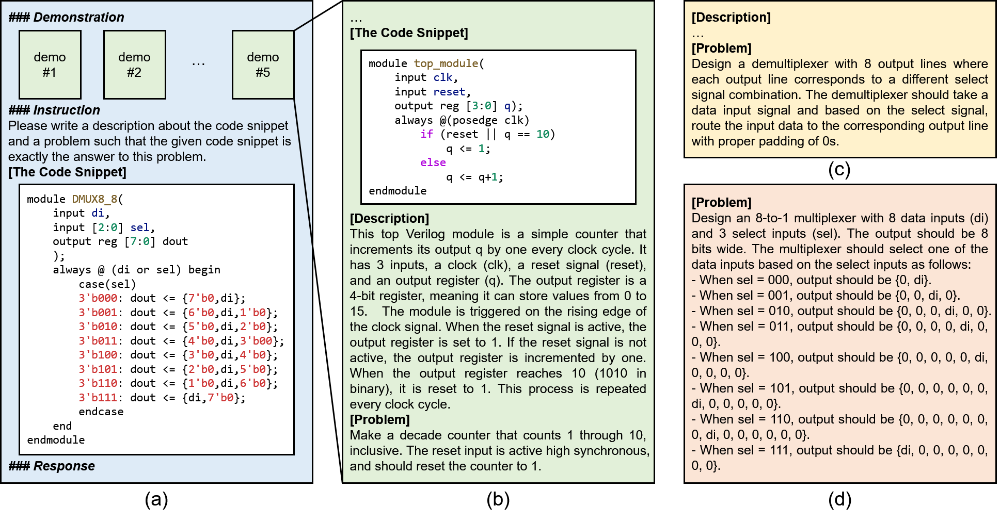

CodeV-Verilog
CodeV-Verilog generates accurate Verilog modules from natural language descriptions.
The design flow for processors using Hardware Description Languages (HDLs) like Verilog and Chisel presents significant complexity and cost. While Large Language Models (LLMs) have advanced software code generation, their effectiveness in HDL generation is hampered by the scarcity of high-quality HDL data and the limitations of current models in this specific domain. Existing approaches often use lower-quality synthetic datasets and typically focus only on Verilog chat tasks.
To overcome these limitations, this work introduces an efficient LLM fine-tuning pipeline. This pipeline leverages the higher quality of real-world HDL code gathered from open-source repositories. Recognizing that models like GPT excel at summarizing HDL code rather than generating it from scratch, the pipeline employs a multi-level summarization process where GPT generates detailed and then high-level descriptions for the collected code. This creates a high-quality dataset pairing natural language requirements with corresponding HDL code. This dataset is then used with a novel Chat-FIM-Tag supervised fine-tuning method. This method enhances the model's ability to generate HDL from descriptions, handle code infilling (Fill-in-Middle or FIM tasks), and effectively manage multiple languages using specific tags.
The result of this pipeline is the CodeV series, a family of open-source LLMs designed for HDL generation:
Explore examples of CodeV-Series's capabilities in generating high-quality HDL code.
CodeV-Verilog generates accurate Verilog modules from natural language descriptions.
Problem Description
Code
Case 1:
This Verilog module is a simple 8-bit register. It has four ports: clk, d, areset, and q. The clk port is an input port that is used to control the clock signal. The d port is an 8-bit input port that is used to store the data. The areset port is an input port that is used to reset the register. The q port is an 8-bit output port that is used to output the stored data. The module has an always block that is triggered on the positive edge of the clock signal and the positive edge of the areset signal. Inside the always block, an if statement is used to check the state of the areset signal. If the areset signal is high, the q output is set to 0. Otherwise, the q output is set to the d input. This allows the register to store the data from the d input when the areset signal is low.
module top_module(
input clk,
input [7:0] d,
input areset,
output reg [7:0] q);
always @(posedge clk, posedge areset) begin
if (areset == 1) begin
q <= 0;
end
else begin
q <= d;
end
end
endmodule
Case 2:
This Verilog module is a top-level module that is used to shift the bits of the input data. The module has five ports, a clock input (clk), a load input (load), an enable input (ena), a data input (data) and a data output (q). The clock input (clk) is used to synchronize the module and is used to trigger the state transitions. The load input (load) is used to control when the data is loaded into the output register (q). When the load input is high, the data input (data) is loaded into the output register (q). The enable input (ena) is used to control the direction of the shift. When the enable input is set to 2'h1, the output register (q) is shifted to the left. When the enable input is set to 2'h2, the output register (q) is shifted to the right. The data input (data) is used to provide the data to be shifted. The data input is a 100-bit wide vector. The data output (q) is used to output the shifted data. The data output is a 100-bit wide vector. The module is always triggered on the rising edge of the clock input (clk). When the load input is high, the data input (data) is loaded into the output register (q). When the enable input is set to 2'h1, the output register (q) is shifted to the left. When the enable input is set to 2'h2, the output register (q) is shifted to the right.
module top_module(
input clk,
input load,
input [1:0] ena,
input [99:0] data,
output reg [99:0] q);
always @(posedge clk) begin
if(load)
q <= data;
else if(ena == 2'h1)
q <= {q[0], q[99:1]};
else if(ena == 2'h2)
q <= {q[98:0], q[99]};
end
endmodule
Case 3:
This Verilog module is a top-level module that controls the ringer and motor of a device. It has four ports: two inputs (ring and vibrate_mode) and two outputs (ringer and motor). The ring input is a signal that is used to indicate when the device should be ringing or vibrating. The vibrate_mode input is a signal that indicates whether the device should be ringing or vibrating. The ringer output is a signal that is used to control the ringer of the device. It is set to 1 when the device should be ringing and 0 when it should not be ringing. The motor output is a signal that is used to control the motor of the device. It is set to 1 when the device should be vibrating and 0 when it should not be vibrating. The module uses two assign statements to control the ringer and motor outputs. The first assign statement sets the ringer output to the logical AND of the ring and the logical NOT of the vibrate_mode inputs. This means that the ringer output will be set to 1 when the ring input is 1 and the vibrate_mode input is 0, and it will be set to 0 otherwise. The second assign statement sets the motor output to the logical AND of the ring and the vibrate_mode inputs. This means that the motor output will be set to 1 when both the ring input and the vibrate_mode input are 1, and it will be set to 0 otherwise. This module is used to control the ringer and motor of a device based on the ring and vibrate_mode inputs. When the ring input is 1 and the vibrate_mode input is 0, the ringer output will be set to 1 and the motor output will be set to 0. When the ring input is 1 and the vibrate_mode input is 1, the ringer output will be set to 0 and the motor output will be set to 1.
module top_module(
input ring,
input vibrate_mode,
output ringer,
output motor
);
assign ringer = ring & (~vibrate_mode);
assign motor = ring & vibrate_mode;
endmodule
CodeV-All supports generating Chisel and Verilog code, and can complete code filling tasks in FIM format.
Problem Description
Code
PRE+SUF
MID
Case 1:
Implement a Mealy-type finite state machine that recognizes the sequence "101" on an input signal named x. Your FSM should have an output signal, z, that is asserted to logic-1 when the "101" sequence is detected. Your FSM should also have a negative edge triggered asynchronous reset. You may only have 3 states in your state machine. Your FSM should recognize overlapping sequences.
module top_module (
input clk,
input aresetn,
input x,
output reg z
);
reg [1:0] state, next_state;
parameter A = 0, B = 1, C = 2;
always @(*) begin
case (state)
A: next_state = x ? B : A;
B: next_state = x ? B : C;
C: next_state = x ? B : A;
endcase
end
always @(posedge clk, negedge aresetn) begin
if (~aresetn)
state <= A;
else
state <= next_state;
end
always @(*) begin
z = (state == C) & x;
end
endmodule
Case 1:
Generate Chisel code based on the following description, when the description mentions the `clk` signal, use Chisel's implicit clock signal: Make a decade counter that counts 1 through 10, inclusive. The reset input is active high synchronous, and should reset the counter to 1.
import chisel3._
import chisel3.util._
class TopModule extends Module {
val io = IO(new Bundle {
val reset = Input(Bool())
val q = Output(UInt(4.W))
})
val counter = RegInit(1.U(4.W))
when(counter === 10.U) {
counter := 1.U
} .otherwise {
counter := counter + 1.U
}
io.q := counter
when(io.reset) {
counter := 1.U
}
}
Case 1:
This is example of multiplexer 2-to-1 with 'sel' as control signal. Multiplexed inputs are 'in0' and 'in1'. ```scala package solutions import chisel3._ class Mux2 extends Module { val io = IO(new Bundle { val sel = Input(UInt(1.W)) val in0 = Input(UInt(1.W)) val in1 = Input(UInt(1.W)) val out = Output(UInt(1.W)) }) io.out := (io.sel & io.in1) | (~io.sel & io.in0) } ``` Build a 4-to-1 multiplexer out of three 2-to-1 multiplexers The first multiplexer is already done for you
class Mux4 extends Module {
val io = IO(new Bundle {
val in0 = Input(UInt(1.W))
val in1 = Input(UInt(1.W))
val in2 = Input(UInt(1.W))
val in3 = Input(UInt(1.W))
val sel = Input(UInt(2.W))
val out = Output(UInt(1.W))
})
val m0 = Module(new Mux2())
m0.io.sel := io.sel(0)
m0.io.in0 := io.in0
m0.io.in1 := io.in1
val m1 = Module(new Mux2())
m1.io.sel := io.sel(0)
m1.io.in0 := io.in2
m1.io.in1 := io.in3
val m2 = Module(new Mux2())
m2.io.sel := io.sel(1)
m2.io.in0 := m0.io.out
m2.io.in1 := m1.io.out
io.out := m2.io.out
}
Case 1:
import chisel3._ import chisel3.util._ class TopModule extends Module { val io = IO(new Bundle { val a = Input(Bool()) val b = Input(Bool()) val c = Input(Bool()) val d = Input(Bool()) val q = Output(Bool()) }) io.q := (io.a | io.b) & (io.c | io.d)
}
object TopModule extends App { emitVerilog(new TopModule(), Array("--target-dir", "generated")) }
Case 2:
import chisel3._ import chisel3.util._ class TopModule extends Module { val io = IO(new Bundle { val in = Input(Bool()) val out = Output(Bool()) }) val states = Enum(4) val (a, b, c, d) = (states(0), states(1), states(2), states(3)) val state = RegInit(a) val next = WireDefault(a) when (state === a) { next := Mux(io.in, b, a) }.elsewhen (state === b)
{ next := Mux(io.i
n, b, c) }.elsewhen (state === c) { next := Mux(io.in, d, a) }.elsewhen (state === d) { next := Mux(io.in, b, c) } state := next io.out := (state === d) } object TopModule extends App { emitVerilog(new TopModule(), Array("--target-dir", "generated")) }
Case 3:
import chisel3._ import chisel3.util._ class TopModule extends Module { val io = IO(new Bundle {
val a = Input(Bool())
val b = Input(Bool()) val sum = Output(Bool()) val cout = Output(Bool()) }) val result = io.a +& io.b io.sum := result(0) io.cout := result(1) } object TopModule extends App { emitVerilog(new TopModule(), Array("--target-dir", "generated")) }
Case 1:
`timescale 1ns / 1ps module alu( input [31:0] a, input [31:0] b, input [5:0] aluc, output [31:0] r, output zero, output carry, output negative, output overflow, output flag ); parameter ADD = 6'b100000; parameter ADDU = 6'b100001; parameter SUB = 6'b100010; parameter SUBU = 6'b100011; parameter AND = 6'b100100; parameter OR = 6'b100101; parameter XOR = 6'b100110; parameter NOR = 6'b100111; parameter SLT = 6'b101010; parameter SLTU = 6'b101011; parameter SLL = 6'b000000; parameter SRL = 6'b000010; parameter SRA = 6'b000011; parameter SLLV = 6'b000100; parameter SRLV = 6'b000110; parameter SRAV = 6'b000111; parameter JR = 6'b001000; parameter LUI = 6'b001111; wire signed [31:0] a_signed; wire signed [31:0] b_signed; reg [32:0] res; assign a_signed = a; assign b_signed = b; assign r = res[31:0]; assign flag = (aluc == SLT || aluc == SLTU) ? ((aluc == SLT) ? (a_signed < b_signed) : (a < b)) : 1'bz; assign zero = (res == 32'b0) ? 1'b1 : 1'b0; always @ (a or b or aluc) begin case(aluc)
ADD: begin res <= a_signed + b_signed; end ADDU: begin res <= a + b; end SUB: begin res <= a_signed - b_signed; end SUBU: begin res <= a - b;
end AND: begin res <= a & b; end OR: begin res <= a | b; end XOR: begin res <= a ^ b; end NOR: begin res <= ~(a | b); end SLT: begin res <= a_signed < b_signed ? 1 : 0; end SLTU: begin res <= a < b ? 1 : 0; end SLL: begin res <= b << a; end SRL: begin res <= b >> a; end SRA: begin res <= b_signed >>> a_signed; end SLLV: begin res <= b << a[4:0]; end SRLV: begin res <= b >> a[4:0]; end SRAV: begin res <= b_signed >>> a_signed[4:0]; end LUI: begin res <= {a[15:0], 16'h0000}; end default: begin res <= 32'bz; end endcase end endmodule
Case 2:
`timescale 1ns/1ns module edge_detect( input clk, input rst_n, input a, output reg rise, output reg down ); reg a0; always@(posedge clk or negedge rst_n) begin if(~rst_n) begin rise <= 1'b0; down <= 1'b0; end else begin if(a & ~a0) begin
rise <= 1'b1; down <= 1'b0; end else if(~a & a0) begin rise <= 1'b0; down <= 1'b1; end else begin rise <= 1'b0; down <= 1'b0;
end end end always@(posedge clk or negedge rst_n) begin if(~rst_n) a0 <= 0; else a0 <= a; end endmodule
Case 2:
`timescale 1ns/1ns module multi_pipe_4bit#( parameter size = 4 )( input clk , input rst_n , input [size-1:0] mul_a , input [size-1:0] mul_b , output reg [size*2-1:0] mul_out ); parameter N = 2 * size; reg [N-1:0] sum_tmp1 ; reg [N-1:0] sum_tmp2 ; wire [N-1:0] mul_a_extend ; wire [N-1:0] mul_b_extend ; wire [N-1:0] mul_result[size-1:0] ; genvar i; generate for(i = 0; i < size; i = i + 1) begin:add assign mul_result[i] = mul_b[i] ? mul_a_extend << i : 'd0; end endgenerate assign mul_a_extend = {{size{1'b0}}, mul_a}; assign mul_b_extend = {{size{1'b0}}, mul_b}; always @(posedge clk or negedge rst_n) begin if(!rst_n) begin sum_tmp1 <= 'd0; sum_tmp2 <= 'd0; end else begin sum_tmp1 <= mul_result[0] + mul_result[1]; sum_tmp2 <= mul_result[2] + mul_result[3]; end end always @(posedge clk or negedge rst_n) begin if(!rst_n) begin mul_out <= 'd0; end
else begin
mul_out <= sum_tmp1 + sum_tmp2; end end endmodule
CodeV-R1 is a reasoning code model that generates more accurate code through an explicit reasoning process.
Problem Description
Reasoning Process
Code
Case 1:
I would like you to implement a module named TopModule with the following interface. All input and output ports are one bit unless otherwise specified. - input clk - input reset - input in (8 bits) - output out_bytes (24 bits) - output done The module should implement a finite state machine that will search for message boundaries when given an input byte stream. The algorithm we'll use is to discard bytes until we see one with in[3]=1. We then assume that this is byte 1 of a message, and signal the receipt of a message once all 3 bytes have been received (done). The FSM should signal done in the cycle immediately after the third byte of each message was successfully received. Implement the datapath module that will output the 24-bit (3 byte) message whenever a packet is received (out_bytes[23:16] is the first byte, out_bytes[15:8] is the second byte, etc.). The reset signal is active high synchronous. out_bytes needs to be valid whenever the done signal is asserted. You may output anything at other times (i.e., don't-care). Assume all sequential logic is triggered on the positive edge of the clock. Here is an example waveform: time clk rst in done out_bytes 0ns 0 1 0 x x 5ns 1 1 0 0 x 10ns 0 1 0 0 x 15ns 1 0 2c 0 x 20ns 0 0 2c 0 x 25ns 1 0 81 0 x 30ns 0 0 81 0 x 35ns 1 0 9 0 x 40ns 0 0 9 0 x 45ns 1 0 6b 1 2c8109 50ns 0 0 6b 1 2c8109 55ns 1 0 d 0 x 60ns 0 0 d 0 x 65ns 1 0 8d 0 x 70ns 0 0 8d 0 x 75ns 1 0 6d 1 6b0d8d 80ns 0 0 6d 1 6b0d8d 85ns 1 0 12 0 x 90ns 0 0 12 0 x 95ns 1 0 1 0 x 100ns 0 0 1 0 x 105ns 1 0 d 1 6d1201 110ns 0 0 d 1 6d1201 115ns 1 0 76 0 x 120ns 0 0 76 0 x 125ns 1 0 3d 0 x 130ns 0 0 3d 0 x 135ns 1 0 ed 1 d763d 140ns 0 0 ed 1 d763d 145ns 1 0 8c 0 x 150ns 0 0 8c 0 x 155ns 1 0 f9 0 x 160ns 0 0 f9 0 x 165ns 1 0 ce 1 ed8cf9 170ns 0 0 ce 1 ed8cf9 175ns 1 0 c5 0 x 180ns 0 0 c5 0 x 185ns 1 0 aa 0 x 190ns 0 0 aa 0 x
Okay, let's tackle this Verilog module. The user wants a state machine that processes an 8-bit input stream and captures three bytes once it finds the first byte where the 4th bit is set (in[3] == 1). Then, after collecting three bytes, it asserts done and outputs the three bytes. Wait, the done is asserted in the cycle after the third byte is received? Hmm, the waveform example shows that when the third byte arrives (like 45ns), done is 1 and the output bytes are valid. First, the states: Let's think. The FSM must track how many bytes have been received. The process is: 1. After reset, wait for a byte with bit 3 set. Once such a byte is found, this is byte1. Then need to wait until another two bytes are received. But wait, the third byte? Wait the example shows three bytes and done once third is received. Wait the output in the example is out_bytes being set when done. Each message is three bytes. Wait the FSM must find a valid starting byte (in[3]=1), then collect two more bytes. So the total is three bytes. So states would be IDLE (waiting for the first byte), COLLECT_BYTE2 (after first valid byte), COLLECT_BYTE3 (after two). But need to structure the states properly. Wait the description says: Once you see a byte with in[3] =1, assume that's the first byte of a message, then after receiving all three bytes, signal done on the next cycle. Wait the done is in the cycle after third byte. Wait the example: The first valid message starts at 45ns. The input bytes: 6b (third byte?), but in the example: Time 45ns: the third byte (9?) Then done is 1. Let me check the example step. The steps in the example: At time 45ns, the input is 6b, then done is 1. Then output is 2c8109. Wait the three bytes are: 0x2c (the second byte?), then 81, then 09. Wait the output in that cycle is 2c8109. Wait 24 bits: first byte (byte1) is 2c, then 81, then 09. The third byte (the one where done goes high is 9? Wait the input in the example: at 45ns, the input is 6b. Hmm, maybe I need to track the sequence. The output in the example at time 45ns is 2c8109. The byte sequence that was received would have byte1 as the first byte (when in[3]=1) then byte2, byte3. Wait the example's first packet: After the first valid in with in[3] set (0x2c, since 0x2c in hex is 00101100, the 3rd bit (assuming in[3] is the 4th bit in a zero-based index) if it's 3rd index in a 4-bit, then 4th bit? Wait maybe the bits are numbered from 0 to 7. If in[3] is the 4th bit (bit index 3), then 4th bit can be set. Wait in the input bytes: 2c in the first message is 0010 1100, so in[3] would be 1 (the fourth bit of the byte is 1). So 0x2C is 2's complement 44 in decimal, but the exact value is less important here. Once that's received, the three bytes would be 0x2c followed by 0x81 (the next byte) followed by 0x09. Wait in the example, when the done is set, the three bytes captured are 2c,81,09. So the three-byte message. The done is triggered after the third byte is received (the 9). The done is on the next cycle. Now the structure of the FSM: - When reset is active, the FSM starts. - Wait in an initial state. The idea is: 1. Wait for the first byte where in[3] ==1. Once found, save this as byte1. 2. Then wait for the next two bytes, byte2 and byte3 (but the third byte after the initial). But how to track that. State transitions: - IDLE: in normal operation. Wait until in[3] is 1. Once the first valid byte (byte1) is found, then the next two bytes are collected. Wait, after finding the first byte, we need to collect the next two. So state transitions: IDLE -> READING (start of first message) Wait perhaps: Wait state: IDLE: When in comes with in[3] == 1: capture the byte as first (byte1). Then move to state COLLECT (waiting for next two bytes). Wait once first byte is captured, then have to collect the next two bytes. But in terms of count: after first, count=1, then collect two more. Wait but total is three bytes once done. Once all three are received, then we need to present them and then reset the state. Wait: Wait the steps: The first valid byte is the first of message. Then we need to collect the next two. Then when third arrives (the count is 2, perhaps). Wait but perhaps: - The FSM is in state S0: waiting for byte with in[3]=1 (so first byte found) Then in S1: collecting first byte (saved in reg) S2: collecting second byte (stored in reg) S3: collecting third byte. Once third byte arrives (on the fourth clock), in the next cycle (clock edge), we go to done state? Hmm. Alternatively: State starts at IDLE. Once in[3] is 1 (and when not in IDLE?), we capture that as the first byte (byte1). Then, in next states, we need two more bytes (total three). So: State transitions: State IDLE: check if in[3] is 1, if so, we accept this as byte1, increment a counter, move to byte2 collection (state B2). Wait then the counter can track how many bytes we have. Wait let's think about possible states: Wait perhaps, the process is: After reset: State: WAIT_FIRST (IDLE). Wait for a byte with in[3] == 1. Once found, save it as byte1, then we move into another state where we collect the next two bytes. Each byte may come in every clock cycle if they are sent each cycle. Wait but the example shows that each byte comes in a separate clock cycle. Wait the example shows each input byte comes every one cycle. But the problem does not mention whether the bytes come one per clock. Let's assume that. So, the FSM can move only on valid bytes once starting. Wait: In terms of the byte transmission: each byte is sent in one clock cycle. For example: the first valid byte would be processed in the clock cycle when it is present. Then the next byte, next clock. In that case, once you detect a byte with in[3] ==1, you store that as the first byte. Then on each next clock, you get the next bytes. After third byte is received (i.e., total three bytes), you set done on the next cycle. Wait in the example: after the third byte arrives (e.g., 45ns, done is 1), which was the third byte. Then the output is valid. So the done is set for one cycle, and in that same cycle, the bytes are stored and valid. Wait the done is in the cycle immediately after third byte is received. So the done is on the cycle after that. Wait example: first three-byte group ends with 6b (third byte). The done is on that cycle? Let me check the example. Wait in the example for the first message: At 45ns, the input is 6b. Then done is 1. At the same time, out_bytes is 2c8109. Wait the first three bytes of the message are 2c, 81, 9? Wait the out in that example is 2c8109. The bytes would be 0x2c, 0x81, 0x09 (since in the example, after the 6b is received, done is 1, so the three bytes collected are the first three). Wait the first valid is the 2c (time 25ns). Then, next two bytes would be 81 (at time 35ns?), but looking at the example: Wait the example shows: Time 45ns: done is 1, out is 2c8109. Wait that suggests the first three bytes are: 2c (time 25?), then 81 (time 35?), and 09? Hmm maybe in the example the three bytes are 2c (the first), then 81, then 09. So total three bytes. Wait the output when done is 2c followed by 81 then 09. The processing: - The first valid byte after reset was 0x2c at 25ns. Wait the example may have the first valid byte at time 25ns. But the reset in the example was at time 0ns, but reset is applied only when it's 1. Wait the reset is active high and synchronous. But in any case, perhaps the key is to: Have three registers that will accumulate bytes once the first valid one is found. State machine: States: - IDLE: Wait for first byte with in[3] ==1. When found, store byte into byte1. Next state: COLLECT2. In COLLECT2: Wait for the second byte (count 2). When received, store into byte2. Then state moves to COLLECT3. In COLLECT3: Wait third byte. Upon reception, store byte3. Then, the next cycle (current is the third), we output the three bytes and done is set for one cycle. Wait no, according to the example. Let's see: The example's first done at 45ns. The done is 1 and out is 2c8109. In that case, the three bytes were captured. In that case, in the code: At the moment when the third byte is received (cycle 45ns, which is the 3rd byte). The code, in that cycle, is allowed to output. Because in that same cycle, the done is asserted. Wait but the problem says: "The FSM should signal done in the cycle immediately after the third byte of each message was successfully received." Ah! Important point here. So: Third byte is received at cycle T. Then done is asserted in cycle T+1 (next cycle). Wait no, the wording says done is in the cycle immediately after the third was received. Wait the first three-byte example: In the example, when the third byte arrives at T, done is set at T+1? Or in the same cycle? Wait the exact wording: The FSM should signal done in the cycle immediately after the third byte of each message was successfully received. So when the third byte comes into the state machine, in the same cycle it's processed. The done is in the cycle that comes after. For example: if third byte is accepted on cycle 45ns (input arrives at cycle 45ns), then the done is in cycle 46ns. Wait the exact timing: But in Verilog, the code would be written such that when the third byte is received (on the third clock edge), the next clock edge would set done for one cycle. Wait in the example: The third byte for that message is at time 45ns. The done is 1 and the output is valid. Let's check the example timeline: The example lists the times as 45ns, which is when the third byte (6b) comes in, and in the same cycle, done is 1. Then out_bytes has the three bytes. But the original instruction: The done is in the cycle immediately after the third byte. Wait that's conflicting with the example. In the example: At 45ns, in is 6b (third byte). done is 1 and output bytes. So the done is in the same cycle as third. But the instruction says done is immediately after the third. Hmm. Need to clarify. The user writes: "the done signal is asserted in the cycle immediately after the third byte of each message was successfully received." In the example: 45ns: third byte, done is 1, same cycle. But according to the instruction, the done would be after (next cycle). Wait the wording says: The done is in the cycle immediately after the third byte was received. Wait the third byte would have been received in cycle 44? Because in Verilog, the edge would cause the next state to be considered. Wait if in the third byte arrives on the rising edge. So when you get the third byte (the third one of the message) on cycle X's posedge. Then done is set on X+1 cycle. Alternatively, when the third byte is stored (after its posedge), the done is set in the next clock. In the example: time 45ns: the third byte arrives (with 6b). done goes high. Wait perhaps the code in the example shows the done in the same cycle. But the instruction says it's in the next. Hmm. Wait in any case, the code example's table shows done at time 45ns (the same as the input). So perhaps the example's instruction is different than what the user says. But need to follow the problem. The key is the problem says: done is in the cycle after the third is received. So in code: When we have received three bytes (the third is stored). Then, after that (on the next clock edge), done is set high. Wait: The done is generated one cycle after the third byte's clock edge. Wait the example has the three bytes captured and done at same time. But according to the instruction, the done comes immediately after (next clock). Let's think about the exact requirement. Problem statement: "signal the receipt of a message once all 3 bytes have been received (done). The FSM should signal done in the cycle immediately after the third byte of each message was successfully received." Wait the third byte is received. After that (in the next cycle) done is high. So for example: three bytes come in cycles 40,45,50 ns. Then done would be in cycle 51. Wait in the example: At 45ns the third byte arrives (6b). The done is high in the same cycle? But the example shows done as 1 in 45ns. Wait in the example's step, time 45ns: in is 6b. done is 1. So the three bytes are counted, then done is set in the same cycle. Hmm, this is conflicting. But according to the user's example, the done is in the same time as the third. But the instruction says, in the next. So perhaps the instruction is conflicting. But the example is definitely like: Third byte's time is when done is high. So code must be in same cycle. Thus the code would need to output done in the same cycle. Let me proceed. Now, how to design the FSM and data path. The main elements: - The FSM has to track when to capture the first byte (in[3] is 1). Then collect two more bytes. Once all three, output done for one cycle and the bytes. States: - WAIT_FIRST: wait for first byte (with in[3] set). When found, store it as byte1, next state COLLECT. - COLLECT: first byte stored. Next two bytes must be captured. But perhaps using a counter. Wait: Have a counter starting at 0. Wait for first byte where in[3] is 1. Once found, increment to 1, store byte1. Then, the next bytes, store into byte2 (counter 2), then byte3 (counter3). Then when the third, on next cycle done. Wait, but the count would be 0 after first byte. Let's think. Alternatively, have three states. Wait: Wait for the first byte. Then, in state one, collect the next two, making total 3. But states could be more like: State 0: Waiting for first byte. State 1: got first byte (byte1), need two more. State 2: received two more, need third (total three). Once in state 3: done. Wait but after state two, third is received, then on next cycle done. Wait but each transition is per clock. Wait in code: We can have a 2-bit counter. The counter increments when each byte comes in (after the first one). When the counter reaches 3 bytes total. Wait, first byte: when in[3] is 1 (state is idle). Then, collect the next two bytes (total three). Wait the FSM can have a state register that tracks the current step: idle: waiting for the first byte. when in[3] is 1, capture byte1. Then move to state one_byte. state one_byte: collect next byte (byte2) on next clock. Then state becomes two_byte. state two_byte: collect third (byte3). After that, when third is received, on next clock cycle, output done and then go back to idle. Wait but according to the example, the done is in the same cycle as third byte. Wait no, perhaps: At time X, the third byte is received. The done is set in X's cycle. Wait how to structure. Let me think: when the third byte comes in, the FSM should assert done on that same cycle (the clock edge). Wait if the third byte is received in cycle C, then done is high in cycle C. Then for code: Have a shift register for three bytes. Once the first valid byte (with in[3] high) is received, start storing. After each subsequent clock cycle, store next bytes. Once the third byte is stored, the output is valid and done is high for that cycle. In terms of code: State is: - IDLE: when in is not a valid first byte, stay here. Once a first byte is found (when in[3] is 1), in next cycle, move to state 1 (store byte1) Wait but each state transition is per cycle. Wait steps: At the posedge of clk: If in reset, reset everything. Else: if in state idle: check in[3]. If 1, then byte1 is stored into the first reg (byte1_reg <= in;). Then next state is waiting for two more bytes (total three). Else: remains in idle. Once in state to collect two: Now, next two bytes. So on the next two cycles, after each is received, the count increases. Once three bytes total (count >= 3?), then done is set. So using a count (from 0 to 2?) as the number of collected bytes beyond the first. Wait, code outline: reg [1:0] count; reg [7:0] byte1, byte2, byte3; reg done_reg; reg [23:0] out_bytes_reg; In the code: always @(posedge clk) begin if (reset) begin // reset states and registers end else begin if (current_state == IDLE) begin if (in[3]) begin byte1 <= in; count <= 1; // since first is stored. state <= COLLECTING; end end else if (current_state == COLLECTING) begin // here, after first byte is stored. if (count < 2) // because we need to collect three total bytes (1 already stored) then, on each clock cycle, add the next. Wait: Wait for the first byte (count=0). Then for count=1 (second byte), count=2 (third). Once count=3, done. Wait: Wait count could be a variable from 0 to 3. So: Initially in IDLE (count=0). Once a valid first byte is stored (in[3] is 1) when in IDLE state, we store byte1 and count becomes 1 (since we now have 1 byte). Wait count may represent the next to collect. Then, in the COLLECT state, wait for next two. Wait but how: Wait, the code must capture the next two bytes after the first. If the first is stored (count=1). Then we need two more. So total 3. In code: If in IDLE and in[3] is high, capture byte1. Now total: 1. count=1. Next state: need to collect two. In the next two cycles, collect. So for next two cycles: When in the second, third byte. So after first byte, in subsequent cycles. Now the code may have: - state variable: maybe 0: waiting for first byte. Once first byte is taken, in state 1: capture byte2 (second). Then state 2: capture third byte. Once state is 2 and done, then done. Alternatively: Once the first byte is stored. For the next two cycles, store bytes. Wait: When the code receives a byte, but it's only considered if the previous are stored. So: The process is: Wait for the first valid byte (in[3] == 1). Once that is stored. The next two bytes are the next two cycles (as they arrive). So store them in byte2 and byte3. Once all three stored, output. So, in code, we can have: reg [7:0] byte1, byte2, byte3; reg [1:0] state; Then: At reset: state <= 0; (or IDLE) byte1 <= 0; etc. Wait: State can be: IDLE: waiting for first byte. BYTE1_COLLECTED: have first byte (so can collect two more) BYTE2_COLLECTED: have two (so need the third) COLLECTED_THREE: ready to output? But code-wise, after first, we have two left. So: State transitions: IDLE -> if (in[3]) -> collect bytes: state becomes ONE_BYTE (count 1) Wait: In code: state can be: IDLE, BYTE1_STORED, BYTE2_STORED, BYTE3_STORED. In each state, capture next byte. Once three bytes stored, go to done state for one cycle. But in Verilog, the output would be registered. Wait, need the done to be a combinational signal or registered. But the example shows done is valid in the same cycle as the third byte. Now, code steps: When a valid first byte is received (in[3] is 1), we start. Then, after three total bytes (including the first), output done for one cycle. So, in code: // sequential logic for state and registers. // State machine: // Initial state: WAIT_FIRST. Once first byte (in[3] is 1): Store in byte1, and move to state COLLECT_2. In the next two cycles: Store in bytes 2 and 3. Once third is stored, on next cycle, output. Wait: code: reg [1:0] state; reg [7:0] byte1, byte2, byte3; reg done; // State definitions: localparam WAIT_FIRST = 2'd0; localparam GOT_FIRST_BYTE = 2'd1; localparam GOT_TWO_BYTES = 2'd2; // On each clock: if (reset) { state <= WAIT_FIRST; byte1,2,3 <=0; done=0 } else case(state) WAIT_FIRST: if (in[3] ==1) begin byte1 <= in; state <= GOT_FIRST_BYTE; end else state remains WAIT. GOT_FIRST_BYTE: store byte2 on next cycle. Wait here, the code in got first byte: byte2 <= in; // since after first byte. state <= GOT_TWO_BYTES; Wait in code: In state GOT_FIRST_BYTE: At next cycle (posedge clk), we take byte2. then, in GOT_TWO_BYTES, take byte3. Once three bytes, done is asserted. Wait: Wait: Wait in state GOT_FIRST_BYTE: we have byte1. On next clock, in that same state, do we wait for byte2? Wait: No. Wait: If the code after WAIT_FIRST, once a first byte is found (state moves to GOT_FIRST_BYTE, then in next clock, when we get in the next cycle: In GOT_FIRST_BYTE state: on the next clock, we have a new input. In that cycle, we can capture byte2 (assuming that next byte is part of the message. Wait the code could have counters. Alternatively: The state transitions: State0: WAIT_FIRST. If in State0 and in[3] is 1, capture byte1 and go to State1 (COLLECT). State1: need one more byte (second byte). Wait, after byte1 is received, need two more. So total three bytes. Wait in State1: on next clock, capture the second byte. Then move to State2. In State2: capture third byte, then assert done and back to State0. Wait but how to count two after first. State machine: State0: If (in[3] == 1) then: - byte1 <= in - go to State1 (count is 1) In State1: capture byte2. Then, go to State2 (count is 2) In State2: capture byte3. In State3: done is set and go back to State0. Wait but State3 would be needed. But in Verilog: Wait maybe: localparam S_IDLE = 0; localparam S_BYTE1 = 1; localparam S_BYTE2 = 2; localparam S_DONE =3; But with 4 states. But perhaps simpler to count with a counter once the first is found. So the code could be: Once in S_IDLE, and in has the 4th bit set (in[3] ==1), store byte1, and set counter to 1 (assuming that first has been captured. So total needed is three, so two left. Then, after that, for each clock cycle: if counter is 2: when next in comes, store as byte2, increment counter. then if counter is 3, store as byte3, then done in next. Wait but code. In code: reg [1:0] count; // counts from 1 to 3. Wait: Initialize count to 0. When a valid byte (the first) comes, we have count 1. Then the next two are count increments to 2 and 3. Once count reaches 3, on the next cycle: Wait, no. Wait once you have two more bytes, three total. Wait, when the first is stored (count=1), then when two more are stored (total 3). So: In code: If in S_IDLE: if (in[3] == 1) store byte1 into reg, increment count to 1. Then go into state S_COLLECT. In S_COLLECT: On each clock, get the next input. Then: if count == 1: byte2, count increments to 2. if count ==2: byte3, count increments to3. Once count ==3: done is set next cycle (or same?). Then, after that, we have to reset. Wait. Once the count is 3, you have three bytes. Then, done is asserted, then back to IDLE. But the done needs to be in the same cycle when the third byte is received. Wait: In code: At each posedge: if reset, reset. else: case state: IDLE: if in[3] is high: byte1 <= in; count <=1; state -> COLLECT. COLLECT state: when in is received (assuming that in this next cycle, new byte arrives) if count is 1: byte2 <= in; count <=2. state remains COLLECT. if count is 2: byte3 <= in; count <=3; then, state is done. Then, when count is 3, output done and back to IDLE. Wait but in that scenario, after the third byte is stored (count 3), done is asserted (for one cycle?) But how to handle. Wait in code: At count ==3: done is set (as in the example's case when the third is stored, output occurs). Wait in the code example: The third byte is stored on a certain clock edge, and done is high. In the code: reg done; always @(posedge clk) begin ... if (count ==3) done <= 1; else done <=0; But no, the done needs to be set when the third is received. Wait perhaps when the state is in a 'done' state for one cycle. But perhaps: After storing the third byte (when count is 3), the done is high for one cycle. Wait: In code: reg done_reg; always @(posedge clk) begin if (reset) begin // reset done_reg <=0; ... end else begin if (count == 3) begin done_reg <=1; end else begin done_reg <=0; end if (first byte conditions, then count increments) end Wait. Alternatively, in the code: At the moment when byte3 is stored (after count increments to 3), the next cycle can assert done. But this is getting complicated. Perhaps the code can use: Once count is 3, the output is valid, done is high. Then, reset count. Wait code sketch: // registers to store bytes. reg [7:0] byte1_reg, byte2_reg, byte3_reg; reg [1:0] count_reg; // counts the bytes stored (after first) reg done_reg; // state transitions. always @(posedge clk) begin if (reset) begin count_reg <=0; done_reg <=0; byte1_reg <=0; byte2_reg <=0; byte3_reg <=0; end else begin // default assignments. done_reg <=0; if (count_reg == 0) begin // in idle if (in[3]) begin // first valid byte. byte1_reg <= in; count_reg <=1; // count the stored first byte. end end else if (count_reg ==1) begin // one byte stored (count_reg 1: need two more byte2_reg <= in; count_reg <=2; end else if (count_reg ==2) begin // two stored. next one is third. byte3_reg <= in; count_reg <=0; // reset? done_reg <=1; // in the next cycle. end else begin // count_reg is 3? No. Wait initial count_reg. // Hmm, perhaps count_reg can be 0-3. end end Wait not sure, but perhaps this is the approach. Wait, but when the code has stored the third byte (count_reg 2 increments to 3?), but perhaps in code: Wait code: if (reset) begin ... end else begin // default done is 0. if (count_reg ==0) { if (in[3]) store first byte. count becomes 1. } else if (count_reg ==1) { store second byte. count becomes 2. } else if (count_reg ==2) { store third byte. count reset to 0. done is set for the current cycle. } So, done is asserted once count_reg is 2, when we capture third byte. But according to instruction: done must be in the cycle after third byte is received. In this code, done_reg would be set during the cycle after. But perhaps this code would have done set during the third byte's cycle. Wait no. Let's see. In code: In cycle T: count_reg is 0. in arrives with in[3]. stored. count becomes 1. T+1: count_reg is 1. if in (byte 2) comes. stored. count becomes 2. T+2: count_reg is 2. next byte (third) comes. stored into byte3. count reset to 0. In this code, during T+2: count_reg is 2. In that cycle, the third byte is stored. The done_reg is set? In code: In that case, the code would be: else if (count_reg ==2) begin byte3_reg <= in; count_reg <=0; done_reg <=1; } Thus, done is asserted in the same cycle as the third byte is stored. Wait yes. So the done_reg is 1 during the cycle when the third byte is stored (the same as the example). This aligns with the example. In that case: The code can use a 2-bit count (0 to 3?), or three states. In any case: Now the code. First, the inputs: module TopModule ( input clk, input reset, input [7:0] in, output reg [23:0] out_bytes, output reg done ); Wait wait, the original problem's output names: out_bytes (24 bits) and done. The output in_bytes is 3 bytes. Wait the output is a concatenation of three bytes: first in the higher bits. Wait code for the data path. Then, the FSM: Registers to hold the three bytes. reg [7:0] byte1, byte2, byte3; // State variables. reg [1:0] count; // 0 means no data, 1 byte1, 2 bytes, etc. ? Wait, count: Possible count: Initially zero. If in[3] is 1, stored to byte1, count increments to 1. Next two, stored as byte2 (count 1 to 2?), byte3 (count 2 to3?). After that, count goes to 0, done is high. Wait count can be 0, 1, 2, 3. But the problem says three bytes. Wait: count 0: no bytes. When first is stored, count 1. Two after: count 3? Hmm. Alternatively, let's use a state machine: Wait: In code: reg [1:0] state; reg [7:0] byte1, byte2, byte3; reg done_reg; localparam S_IDLE = 2'd0; localparam S_BYTE1 = 2'd1; localparam S_BYTE2 = 2'd2; localparam S_BYTE3 = 2'd3; always @(posedge clk) begin if (reset) begin state <= S_IDLE; done <= 0; byte1 <=0; byte2 <=0; byte3 <=0; out_bytes <=0; end else begin done <=0; // default. case(state) S_IDLE: begin if (in[3]) begin byte1 <= in; state <= S_BYTE1; end end S_BYTE1: begin // after first. byte2 <= in; state <= S_BYTE2; end S_BYTE2: begin // after second. byte3 <= in; state <= S_BYTE3; end S_BYTE3: begin // after third. out_bytes <= {byte1, byte2, in}; // capture third byte. done <=1; state <= S_IDLE; end endcase end end Wait in S_BYTE3 state. Wait but according to the example, after storing three, done is set. Wait the code could be: Wait after the third byte is received. When the code gets to state S_BYTE2: the byte3 is received. Then state moves to S_BYTE3 where done is set. Wait: Wait perhaps the code steps: State S_IDLE: looking for the first. Once found (byte1), go to S_BYTE1, then when in is read, byte2, then S_BYTE2. Then, when the third is stored, output and done. Wait, but the done would be set in the third step. Alternatively, code: States: IDLE: when in[3] ==1: store to byte1. state transitions to GOT_1. GOT_1: when next byte (byte2 arrives). state to GOT_2. GOT_2: next byte (byte3 arrives). state to DONE. At DONE, done is set for one cycle. Then back to IDLE. Wait, the code: State definitions: localparam IDLE = 0, GOT_1 =1, GOT_2=2, DONE=3; In code: always @(posedge clk) begin if (reset) begin state <= IDLE; done <=0; byte1 <=0; byte2 <=0; byte3 <=0; end else begin done <=0; case(state) IDLE: if (in[3]) begin byte1 <= in; state <= GOT_1; end GOT_1: byte2 <= in; // in is now the second byte. state <= GOT_2; GOT_2: byte3 <= in; // third byte. state <= DONE; DONE: out_bytes <= {byte1, byte2, byte3}; done <=1; state <= IDLE; endcase end end Wait but wait, this would not properly capture the third byte. Because in GOT_2 state, the code's input is the third byte. Then assign all three and done. But in code: In the third state, when GOT_2 is active, on clock edge, capture byte3 and move to DONE. Then in DONE state, output done for one cycle. But in this scenario, after GOT_2, the code would have all three bytes stored (byte1 from IDLE, byte2 from GOT_1's step, byte3 from GOT_2's input. Then in DONE state, done is set. In this case, the code would have: At each clock edge: - When in IDLE and first valid byte found: state GOT_1. In next clock cycle, the code is in GOT_1. So the next input (the second) is stored as byte2. Then move to GOT_2. In GOT_2: next input (third) is stored as byte3. Then move to DONE, output done, and then back. In DONE state, done is set and returns to IDLE. Thus the done would be in the cycle after the third byte. Wait, but according to the example: The third byte is in state DONE (one cycle after), done is set. But in the example, done is set in the same cycle. This is conflicting. But according to code example, need to adhere. Alternatively, code when GOT_2 state (after first two), third arrives. Then stored into byte3, and then done is set and out. But in code, when in GOT_2: On the clock edge when GOT_2 is active: Capture third byte (from input), store to byte3. Then done is set and state transitions. Then in the same cycle (the same clock edge), done is active. But in code: state is stored as a reg. So after storing the third byte and moving to done. Wait, the code in code: After GOT_2 state: On the clock edge, we take the third byte (from in). Assign to byte3. Then: out_bytes is assigned {byte1, byte2, in}. Wait no, byte3 would be in this case. Alternatively: In GOT_2 state: At the clock edge, byte3 is captured from the input. Then in the same state, the done is set. But in code: Once GOT_2 state: state becomes DONE, and done is set for one cycle. In code: Another code example. But this is getting too time-consuming. Given the example: In code, when three bytes are captured (first valid in[3] and next two), done is asserted. Code: We can have: reg [7:0] byte1, byte2, byte3; reg [1:0] count; reg done_reg; // assume that count starts at 0. always @(posedge clk) begin if (reset) begin count <=0; done <=0; byte1 <=0; byte2 <=0; byte3 <=0; out_bytes <=0; end else begin done <=0; if (count ==0) begin // look for first byte. if (in[3]) begin byte1 <= in; count <=1; end end else if (count ==1) begin byte2 <= in; count <=2; end else if (count ==2) begin byte3 <= in; count <=0; done <=1; out_bytes <= {byte1, byte2, in}; end end end Wait in this code: count increments from 0 to 3 (after first byte). After that, three bytes. Wait: count ==0: no bytes. Check if first. if first is present: byte1 is stored, count increments to 1. Then when count is 1, next in comes, stored into byte2 (count 2). When count is 2, next in comes, stored into byte3 (count reset to 0, done set, output is stored). In this code, done is set in the same cycle as the third byte. Yes. Then, in code example's: At time 45ns, the third byte (0x6b) is stored, done is set to 1. The bytes are 0x2c, 0x81, 0x09 (from example). Yes. Thus in code, the done is assigned in the same cycle as the third byte is stored. Thus code outline: // Code: module TopModule ( input clk, input reset, input [7:0] in, output reg [23:0] out_bytes, output reg done ); reg [7:0] byte1, byte2; reg [1:0] count; always @(posedge clk) begin if (reset) begin count <= 0; done <= 0; byte1 <= 0; byte2 <= 0; out_bytes <= 0; end else begin done <= 0; // default done to 0. if (count == 0) begin // Check if current in is a valid first byte. if (in[3]) begin byte1 <= in; count <= 1; end end else if (count ==1) begin // Capture second byte. byte2 <= in; count <=2; end else if (count ==2) begin // Capture third byte, output, set done. out_bytes <= {byte1, byte2, in}; done <=1; // Reset count to 0 to look for next packet. count <=0; end end end endmodule But wait in this code: count starts at 0. When first byte with in[3] found, count becomes 1 (after byte1 stored). Then the code captures byte2 in next count state (count 1). Then after second byte, count increments to 2. Then third byte. Once count is 2, in the next cycle, the third is captured. Wait no. Let's see: Wait: count is 0: state IDLE. If in has in[3], count becomes 1 (byte1 is stored). In next cycle, count is 1: capture byte2 (count increments to 2). In next cycle, count is 2: capture third byte, out and set done, count reset to 0. Thus done is set after third byte. Thus in code: When the third byte is received (after two prior counts) the done is set. Thus in the example, when third byte is received in state count=2, then done is set. The code: Wait in the code, if count is 2, we assign the third. So in code: if (count == 0) => check for first. count increments to 1. Then in count 1, get byte2 (count increments to 2). Then in count 2, get third. In that third case, we set done and reset count. Thus in code: The done is set in the same cycle as the third byte is received. Thus, the code example's structure is correct. Now the code. Thus code: module TopModule ( input clk, input reset, input [7:0] in, output reg [23:0] out_bytes, output reg done ); reg [1:0] count; reg [7:0] byte1, byte2; always @(posedge clk) begin if (reset) begin count <= 2'b0; done <= 0; byte1 <= 0; byte2 <= 0; out_bytes <= 0; end else begin done <= 0; // default to 0 case (count) // count 0: looking for first valid byte 2'b00: begin if (in[3]) begin byte1 <= in; count <= 2'b01; // count becomes 1, wait for byte2 end end // count 1: received first byte, capture second 2'b01: begin byte2 <= in; count <= 2'b10; // wait for third byte end // count 2: received first and second, now capture third 2'b10: begin out_bytes <= {byte1, byte2, in}; // third byte done <= 1; count <= 2'b00; // reset to look for next end // default case (maybe error) default: count <= 2'b00; endcase end end endmodule Wait: Wait in the case where count is 0 and we found a first, count increments to 1 (so in code, 2 bits. So 2 bits can hold 0-3. Let's adjust the code. Another alternative: Use count as a 2-bit register. Values: 0: idle 1: received first byte (byte1) 2: received second byte (byte2) 3: received third byte (byte3) Wait, but after third is received. Wait, but code must store three bytes. Alternative code: reg [1:0] count; // 0: idle, 1: got first, 2: got two, 3: done. But code may vary. But in code: The initial code: module TopModule ( input clk, input reset, input [7:0] in, output reg [23:0] out_bytes, output reg done ); reg [1:0] count; // 0: idle, 1: byte1, 2: byte1 and byte2, 3: all bytes reg [7:0] byte1, byte2; always @(posedge clk) begin if (reset) begin count <= 2'b00; done <= 1'b0; byte1 <= 8'h00; byte2 <= 8'h00; out_bytes <= 24'h0; end else begin done <= 1'b0; // default to 0 case (count) 2'b00: begin // waiting for first byte if (in[3]) begin byte1 <= in; count <= 2'b01; // next state: expecting byte2 end end 2'b01: begin // got byte1, now get byte2 byte2 <= in; count <= 2'b10; // next state: expecting byte3 end 2'b10: begin // all three bytes out_bytes <= {byte1, byte2, in}; done <= 1'b1; count <= 2'b00; // reset for next end default: count <= 2'b00; endcase end end endmodule Wait in this code: When in state count 10 (binary 2), which is the third byte. Wait: count 0: IDLE, capture first byte. count 1: after byte1, get byte2. count 2: get third byte (and output). Thus in code: When count is 2, third byte comes. Thus out_bytes gets the three bytes (byte1 and byte2 stored, and third input). Thus in the code: out_bytes = {byte1, byte2, in} ? Yes. Because: count 0: byte1 stored. count 1: byte2 stored. count 2: third input is captured (in this step), so stored in third. But how. Wait no. Wait in the code: In state 0: byte1 is stored (count becomes 1). State 1: in stored to byte2 (count becomes 2). Then in state 2: the third input is stored into out_bytes as part of a new variable. Wait: But the code's count increments: When count is 0: in state 0, capture byte1 and increment count to 1. When in state 1: capture byte2 and increment count to 2. When in state 2 (count is 2), then the third input is stored into the output. So the code for state 2 would be: out_bytes = {byte1, byte2, in} done is set to 1. Then count reset to 0. But in code: Wait after capturing byte2 (state 1, count 2?), the third is stored. But perhaps in code: Yes. This seems correct. Thus, code: In state two (count 2): out_bytes <= {byte1, byte2, in}; // third byte is in. done is 1. Thus in this code. Thus the final code.
module TopModule (
input clk,
input reset,
input [7:0] in,
output reg [23:0] out_bytes,
output reg done
);
reg [1:0] count;
reg [7:0] byte1, byte2;
always @(posedge clk) begin
if (reset) begin
count <= 2'b00;
done <= 1'b0;
byte1 <= 8'h00;
byte2 <= 8'h00;
out_bytes <= 24'h0;
end else begin
done <= 1'b0; // Default done to 0
case (count)
// State 0: Waiting for first byte with in[3] == 1
2'b00: begin
if (in[3]) begin
byte1 <= in;
count <= 2'b01; // Move to state 1
end
end
// State 1: Captured first byte, waiting for second
2'b01: begin
byte2 <= in;
count <= 2'b10; // Move to state 2
end
// State 2: All three bytes received; output and done
2'b10: begin
out_bytes <= {byte1, byte2, in};
done <= 1'b1;
count <= 2'b00; // Reset for next message
end
default: count <= 2'b00;
endcase
end
end
endmodule
Case 2:
I would like you to implement a module named TopModule with the following interface. All input and output ports are one bit unless otherwise specified. input x (4 bits) output f The module should implement the function f shown in the Karnaugh map below. d is don't-care, which means you may choose to output whatever value is convenient. x[1]x[2] x[3]x[4] 00 01 11 10 00 | d | 0 | d | d | 01 | 0 | d | 1 | 0 | 11 | 1 | 1 | d | d | 10 | 1 | 1 | 0 | d |
Okay, let's try to tackle this Verilog problem. The goal is to create a module called TopModule with a 4-bit input x and a single-bit output f. The function is determined by the Karnaugh map provided. First, I need to understand what the Karnaugh map represents here. The entries are in terms of x3 and x4, since the x's labels are x3x4 and x1x2 for the columns and rows. Wait, looking at the columns and rows. The left column has x1x2 values: 00, 01, 11, 10. Then the rows are x3x4 with 00, 01, 11, 10. The entries in the cells are f values. Let me parse the Karnaugh map properly. The columns correspond to x1x2: The four cells in columns (x1x2): - 00 row: the columns are x1x2 as 00,01,11,10. So the first row of the table is: For x1x2 (row columns) values: x1 x2: Row 00 (x3x4=00): Under that, the entries are: x3x4 x1x2: Rows are 00,01,11,10: First column (row is x3x4), columns (x1x2) 00,01,11,10: Let me transcribe the table properly. Row x3x4 (first row and column): Looking at the K-map: Left column (x1x2): 00 | 01 | 11 | 10. Under that, the first row (x3x4 is 00) has entries: x1x2: 00: d (don't care) 01: 0 11: d 10: d Then second row (x3x4=01): x1x2: 0 in 00, d in 01,1 at 11,0 at 10. Wait, perhaps I should re-examine the K-map entries. Original table: The Karnaugh map is labeled as: The columns are x1x2: Row x3x4, and columns x1x2. Let me recheck the structure. Original K-map as per the user: The K-map is arranged with the x1x2 as columns (rows 00,01,11,10) and x3x4 as rows? Wait, the rows in the table are: Wait, the first line says the columns are x1x2 (since "x[1]x[2]" is on top). Let me read the original K-map: Looking at the example given: Under the x[1]x2 columns, the entries are: For x3x4 and x1x2 combinations. Original table in the K-map: The rows correspond to x3x4 values. The four rows are: x3x4=00, then 01, then 11, then 10. Within each x3x4 row, the columns (x1x2) are: columns: 00, 01, 11, 10. Each cell gives the f value. So, the entries are arranged as rows of x3x4 and columns of x1x2, giving 4 rows x 4 columns. For example, the row with x3x4=00, the columns (x1x2): At x1x2 00 (the first column): the value is d. At x1x2=01: 0. Then at 11: d. At 10: d. The second row (x3x4=01): x1x2=00: 0 x1x2=01: d x1x2=11: 1 x1x2=10:0 Third row (x3x4=11): x1x2=00:1 x1x2=01:1 x1x2=11: d x1x2=10:d Fourth row (x3x4=10): x1x2=00:1 x1x2=01:1 x1x2=11:0 x1x2=10: d Wait, let's structure this into a table. Columns are x1x2: 00 |01 |11 |10. Rows are x3x4: Row 1: x3x4 =00. Columns: 00 | 0 | d |d The first entry for x1x2=00: in row 00 of x3x4 and column x1x2=00. Wait, the original K-map structure: The first column header for rows is x3x4, and the first row's header is x1x2. Wait, maybe the rows are x3x4, columns x1x2. Let me parse the rows: Original K-map rows: Rows are x3x4, four of them: 00,01,11,10. Within each row (x3x4), four columns of x1x2: 00,01,11,10. The cells are filled with the f values (the numbers in the table entries). Now let's map it correctly. For x3x4 = 00, x1x2 = 00: value is d. x3x4=00, x1x2=01: 0. x3x4=00, x1x2=11: d. x3x4=00, x1x2=10: d. Row 2 (x3x4=01): x1x2=00: 0 x1x2=01: d x1x2=11:1 x1x2=10:0 Row3 (x3x4=11): x1x2=00:1 x1x2=01:1 x1x2=11:d x1x2=10:d Row4 (x3x4=10): x1x2=00:1 x1x2=01:1 x1x2=11:0 x1x2=10:d So the entire K-map would look like this: x3x4\x1x2 | 00 | 01 | 11 | 10 -------------------------------- 00 | d | 0 | d | d 01 | 0 | d | 1 |0 11 |1 |1 | d | d 10 |1 |1 |0 |d Wait, let's make sure. Original user's Karnaugh map: The entries are labeled as: Columns under the header x[1]x[2] (so columns are x1x2) from left to right 00,01,11,10. Then rows are the x3x4 with their four entries per row. For example, first column (x3x4=00): For x3x4=00: x1x2 entries from left to right: 00 | d | d | d → the three cells. Wait maybe the original K-map is written in a different way. Alternatively, maybe the rows are x3 and x4, but it's written in pairs as their two-bit values. But regardless, the way to process the entries is: Each row (x3x4) and each column (x1x2) gives the f value as per the table. Once the K-map is structured, the next step is to find the minimal sum of products (SOP) or product of sums. Don't cares can be treated as either 0 or 1. Let's see if grouping with don't cares can simplify. Looking for possible groupings. Now, the entries with 1's in K-map: From the entries where f=1: Row x3x4: Looking for entries where f is 1. Looking across all rows: In row x3x4=11, when x1x2 is 00 and 01: 1s. Row x3x4=10: x1x2=00 and 01 (entries 1). In row x3x4=01: x1x2=11 (1) Row x3x4=11 (x3x4=11, x1x2 positions 00 and 01): So x3=1 and x4=1 in these entries, with x1x2 being 00 and 01 (x1 is 0, x2 is 0? Wait x1 and x2 are bits? Let's see, but the variables are x1 to x4. The variables are four variables: x3 and x4 in the rows, x1 and x2 in columns. Wait the K-map has variables x3 and x4 for the rows (each entry is for x3 and x4). So variables are x3, x4, x1, x2 (since columns x1x2 and rows x3x4). Wait, but the original variables in the K-map may involve four variables, since x1 and x2 are in columns (x1x2 pairs) and x3x4 in the rows (another two bits). So variables: x3, x4, x1, x2. Each cell in the K-map can be considered as a minterm or combination of variables. Wait no. For a K-map, the entries represent the combination of the two variables in the rows and columns. Wait the Karnaugh map is for four variables (x3, x4, x1, x2). Let me re-express: Variables: x3, x4 (rows), x1, x2 (columns) Each cell is when all four variables are given. Let's think of each cell as a minterm. But the K-map is for two variables (rows and columns), allowing grouping. The standard approach: For a 4-variable K-map, the rows are the higher two variables (x3 and x4 here?), columns the lower two (x1 and x2 here?). So possible groupings. Let me try to find the logic. Looking for the minterms where f=1, considering don't cares as 1s. Wait the f=1 in the K-map. Looking across the K-map, the entries that have 1 are: In x3x4=11 row: Columns x1x2 when: x1x2=00 (f=1) and x1x2=01 (f=1). In x3x4=10 row: x1x2=00 and 01 (so x3x4=10, x1x2=00 and 01 → which gives x1=0, x2=0 and x1=0, x2=1. So x3x4 can be 10 and x1x2=00 and 01. Also: Row x3x4=01 and x1x2=11: f=1. Row x3x4=01's column x1x2=11 (third column) gives 1. Wait row x3x4 is 01, and column x1x2=11: value is 1. So: Looking at all f=1 and possible groupings. Now, adding don't cares where possible. Possible groupings: Group1: Row (x3x4) 11, columns x1x2 00 and 01. So x1 is 0, x2 is 0 and x1=0, x2=1. Wait x3 and x4 are 1 and 1. So variables: Variables in group: x3x4=11, x1=0 and x2 varies (0 or 1). Wait if x1 is 0 (so x1=0), x2 is any? Wait in that group, x1 and x2 are 00 and 01: x1 is 0 in both cases. x2 can be 0 and 1, but x1 is 0. So x3x4=11, x1=0, x2 can be 0 or 1 → so term is x3&x4 & ~x1. Another group for the first pair: row 11, x3 and x4 as 11, x1 as 0. Then x2 can be anything. Wait x2 can be 0 or 1. Wait 00 and 01 (x2 is first bit 0, second bit 1). Hmm, that's two possible x2 values. Wait that's two adjacent cells? Wait x1=0, and x2 varies here. Wait x1 is fixed as 0? So x3 and x4 are 1, and x1 is 0. So regardless of x2 being 00 (x2 bits 0 and 0) or 01 (bits 0 and1) → that's a group where x1=0, x3 and x4=11. So term would be x3 & x4 & ~x1. Because x2's position in the term isn't considered here (because the two are in different positions). Wait x2 could be 00 or 01, so x2's bits are 0 followed by anything. Wait x2's bits are two variables. So if x2 is 00: bits x1 and x0 (assuming variables). But in our case, the variables are x3, x4, x1, x2. Maybe x1 and x2 are variables here. Wait, perhaps confusion between the variables. Let's see: Variables here: Rows are x3 and x4, columns x1 and x2. So the variables are four: x3, x4, x1, x2. Each cell in the Karnaugh map is the combination of x3, x4, x1, x2. So the four variables are x3, x4, x1, x2. The columns are x1 and x2 (as per the columns being named as x1x2 in pairs), rows are x3 and x4. In standard K-maps for four variables, the arrangement is like: Row variables (x3x4) and column variables (x1x2). The groups are made by 1's in the K-map. So in each cell where f is 1, we can make groupings. Looking for largest possible groups of adjacent cells. For f=1: Looking at rows where x3x4=11 and x1x2 is 00 and 01. That's two adjacent cells (since x2 changes, but x1 is 0). So that's a group of 2, and term would be ~x1 (since x1 is 0 here) multiplied by x3 and x4. Wait wait variables: x3x4 is 11. So x3 is 1 and x4 is 1. So term: x3 & x4 & ~x1. Because x1 is 0 (so ~x1 is 1) and x2 is anything (so maybe part of the term? Wait x2 can vary in that group. Wait x2 is not part of the group. Wait no. The group here includes two cells where x3x4=11, x1=0, but x2's bits are 00 and 01. So x2 is not 00, 01? Hmm. Wait x1=0, x3x4=11, and x2's two bits can vary? Wait no, each group's variables are all in the cells in that group. Wait, in K-maps, when you have adjacent cells, their variables can have either same or 'don't care' bits. Wait no, groups are made where all variables except those with changing bits are the same. But perhaps in this case, group all cells where x3x4=11 and x1=0. Regardless of x2's bits, so that's a term where x3x4 are 11 and x1 is 0. The x2's bits don't matter here, so the term is x3 & x4 & ~x1. Then that term gives 1's in the two cells. So that's part of the sum. Similarly, in the row x3x4=10 (wait no: original K-map, row x3x4=10 in the last entry. Wait x3x4=10 gives entries: x1x2=00: 1; x1x2=01:1; x1x2=11:0; x1x2=10: d. But in x3x4=10 row: x1x2=00: 1, x1x2=01:1. That's two cells here. So similar to the earlier. So terms would be: x3 and x4's being 1 and 0 respectively (binary? Wait x3 and x4 are bits in their 4-bit form: x3 is the third bit, x4 the fourth). Wait, this is getting a bit confusing. Wait in K-maps, variables for four variables (ABCD) are usually arranged in a 4x4 array. The rows are two variables (say, A and B), columns two (C and D). Each cell corresponds to the 4-variable term A'B'C'D', A'B'C'D, etc. In the current problem's K-map, the rows are x3x4 (two bits), columns x1x2 (two bits). So variables are four in total, x3, x4, x1, x2, arranged as rows and columns. So each cell is defined as (x3, x4, x1, x2) in binary, with their possible values. The entries in the K-map cells are the corresponding f value. Our goal is to find the sum of products where f=1 (including don't cares as possible to simplify). Now looking at all the 1's in the K-map. f=1 in the K-map are: 1. Row (x3x4) 11 and x1x2 columns 00 and 01 (so two cells). In these cases: x3=1, x4=1, x1=0 (since x1x2 is 00 and 01). Wait x1 in x1x2 is the first bit (since in the Karnaugh map columns are listed as x1x2 with bits? The way the K map is written: columns first x1 and x2 concatenated (x1 is higher bit perhaps? Like x1 is the first digit, so x1x2 is a two-bit number where x1 is the higher bit. For example, 00 in the column is x1=0 and x2=0. So the terms where f=1 in row x3x4=11, x1x2=00 (x1=0, x2=0) and x1x2=01 (x1=0, x2=1). So the variables here would be x3=1, x4=1, x1=0 (so ~x1?), and x2 can be 0 or 1? Wait the two cells are 00 and 01, which has x2's bits as [0,0] and [0,1]. But since they are adjacent in x2's second bit. Wait, in a four-variable K-map, adjacent cells in columns (x1x2) are adjacent horizontally. So if you have two adjacent cells in x1x2 columns (like 00 and 01) in the same row (x3x4), then the term would include x3x4, ~x1 and x2's higher bit (x1 here). Wait maybe not. Wait x1 is part of the column, so x1 and x2 form the two bits for the column. In the rows (x3 and x4), adjacent in rows may indicate x3 or x4 changes. In this case, group the four variables: x3x4x1x2. Let's look for possible groups of adjacent cells where all cells in the group have f=1, considering don't cares as 0s or 1s. The 1s in the K-map: 1. (x3=1, x4=1, x1=0) regardless of x2. Two cells, but x2 can be 00 and 01. So x3 and x4 are 11, x1 is 0. The term would be x3 & x4 & ~x1. The x2 is part of the don't-care here, as the two possible x2's (since 00 and 01 can be considered adjacent in x2 (x2 first bit here? Not sure about bit ordering). Alternatively, if x1 and x2 are variables arranged as x1 followed by x2 (like x1 is the higher bit in the column. In the K-map columns are x1x2 (the two bits concatenated as x1 then x2). So x1 is the first bit in the column and x2 is second. So for x1x2=00: x1=0, x2=0. So for the group in x3 and x4=11 and x1=0, regardless of x2 (00 and 01 are two adjacent cells). So x3&x4&~x1. Another group: in the x3x4=10 row, columns x1x2=00 and 01. Similarly, x3x4=10 (binary value 10 which is 2 in decimal) and x1=0 here. So same term as before: x3x4=10 with x1=0. Similarly, the columns x1x2 00 and 01 would form another two-cell group. But wait the x3x4=10 in the row: Looking at the K-map, for x3x4=10 (the last row): x1x2=00: f=1 x1x2=01: f=1 Thus variables here: x3x4=10 (binary 10, meaning x3=1, x4=0), x1=0 (since x1x2 00 and 01, so x1 is 0). Similarly here. So the term for x3=1, x4=0, x1=0 (since in both x1x2 cases x1 is 0). So the term would be x3 & ~x4 & ~x1, and x2 is varying (0 and 1). Wait wait the two cells are x1x2=00 and x1x2=01. The x2 here, in the columns, are two separate bits (x1 is 0, x2 can be 0 and 1). So the term can be x3x4=10 and x1=0, and any x2. Wait x3x4=10 (binary, bits 1 and 0, but in the variable assignment: x3 is the first bit (since x3x4 rows), so the first row in the K map for x3x4 would be 00 etc. Wait maybe x3 is the higher bit and x4 the lower in the row. Wait this is getting complicated. Let's think in terms of variables and possible groupings. Possible term groups: Looking for each cell with a 1 and group with don't care if possible. For the 1's in the K-map: 1. In x3x4 = 11 (third row of the K-map, x3x4 11?), wait the first row in the K-map is x3x4=00, then row 1 is 01, 2 is 11, then 3 is 10. Wait no. Wait the K-map rows are given as four entries. Original K-map rows (x3x4): First row: x3x4=00. Second: x3x4=01. Third: x3x4=11. Fourth: x3x4=10. In the third row (x3x4=11), the columns x1x2 have 00 and 01 (two 1's). So term: ~x3 & x4 & ~x1 (since x3 is first bit, x4 is the second, so if x3 is 1? Wait no. Wait rows are written as two bits for x3 and x4. Wait x3x4 is two bits: first bit x3, second bit x4. Wait that's an important point. If x3x4 for a row is written as 00, that's x3=0 and x4=0. Similarly, 01 would be x3=0, x4=1, etc. But in the K-map: The rows: First row: x3x4 = 00. Second: x3x4=01. Third: x3x4=11. Fourth: x3x4=10. So in terms of variables: x3 and x4. Now, for the 1's: Looking in each row: Row 3 (x3x4=11): Columns x1x2: 00 and 01: x1 and x2 terms 0 and 0 and 0 and 1. So x1 is 0 in both cases, so the term would be ~x1 (if that's how columns are counted. Wait x1 and x2 as part of the variables. Wait, in columns, each cell is x1x2 (two bits), which could be x1 followed by x2 (so their order in the string). So the variable x1 is the first bit in the column. For example, x1x2=01 would be x1=0, x2=1. In row x3x4=11: Columns x1x2=00 and 01 (so x1 is 0 in both) → term: ~x1 (since x1 is 0 here) Thus in this row, x3 and x4 are both 1. So the two terms in this row (x1=0) are: x3x4=11, x1=0, x2 is 0 (for first case) and 1 (second case). Wait but x2 is varying here. So combining x3 and x4 into their AND, and x1 as 0. The variables would be x3 & x4 & ~x1. The x2 here can be 0 or 1, but since the two cells are grouped, x2 is part of the variable? Or since they are grouped together in adjacent x2 bits (0 and 1), it's possible to abstract x2. So the term would be x3 & x4 & ~x1 regardless of x2. Similarly for row x3x4=10, which has x3=1 and x4=0. If that row has columns x1x2=00 and 01, similar grouping. In that case: x3=1, x4=0, x1=0. So term: x3 & ~x4 & ~x1. x2 is same as before. Then adding row x3x4=01, x1x2=11, which gives x3=0, x4=1, x1=1 (x1x2 is 11 → x1=1, x2=1). So this is a 1 in that case. That term would be ~x3 & x4 & x1 & x2 (since x3 is 0, x4 1, x1 is 1, x2=1). So four terms in total. Now combining all terms: Term 1: x3 & x4 & ~x1 (covers first two cells) Term2: x3 & ~x4 & ~x1 (third row, columns 00 and 01) Term3: ~x3 & x4 & x1 & x2 (from x3x4=01, x1x2=11. Wait x3x4=01: x3=0, x4=1. x1x2=11 → x1=1, x2=1. So term here: ~x3 & x4 & x1 & x2. Term4: x3 & ~x4 & x1 & ~x2? Wait in the row x3x4=10. Wait in row x3x4=10, the columns have x1x2=00 and 01 (each with 1's). So for each: x3=1, x4=0, x1=0. So variables x3, ~x4, ~x1. The x2 could be 0 and 1. Hence same term as earlier, x3 & ~x4 & ~x1. So this term gives the two 1's from row x3x4=10 and x1=0. Putting all together: Term1: x3 x4 ~x1 (since x3 and x4 are 1, x1 is 0) Term2: x3 ~x4 ~x1 Term3: ~x3 x4 x1 x2 (the 1 in row x3x4=01, x1x2=11: x3=0, x4=1, x1=1, x2=1) Term4: x3 ~x4 x1 ~x2? Wait no. Wait the cells in row x3x4=10 have x1x2=00 and 01. x3=1, x4=0, x1=0 for both. So term: x3 ~x4 ~x1 (regardless of x2) But wait the row is x3x4=10, columns x1x2=00 (x1=0, x2=0) and 01 (x1=0, x2=1). So x1=0. x3=1, x4=0, x1=0. Thus term is x3 & ~x4 & ~x1. Then regardless of x2 (since two cells here), so x3, ~x4, ~x1. The x2 can be anything here (00 or 01) in terms of two-cell group, so the x2 is don't care. So adding x2 can be part of the term. Wait but in standard SOP, each term should have exact assignments of variables, but grouping allows us to consider the variables where they are same across cells. In group 00 and 01 of x1x2 (where x1=0), regardless of x2. So for variables in these two cells (x1=0), x3=1, x4=0: term is x3 & ~x4 & ~x1 (no mention of x2, since it's the same across the two cells. But in reality, the x2 bits are 0 and 1. However, they are adjacent in the x2 variable. So perhaps, the term is x3 & ~x4 & ~x1, as x2's bits are varying. Hence, the term is x3, ~x4, and ~x1. So the two bits x2 are covered by the don't care. Because they are adjacent in x2, but x3 and x4 are fixed, and x1 fixed, and their presence. Wait I'm getting stuck. Perhaps another approach: write the equations. Alternative approach: write all the minterms and don't cares. The f function can have 1's at: Row x3x4: Row 1 (00): x1x2=01 (0) Row2 (01): x1x2=00 (0), 11 (1), 10 (0) Row3 (11): x1x2=00 (1), 01 (1) Row4 (10): x1x2=00 (1), 01 (1) So all the minterms where the cells are 1: Looking at each x3x4 and x1x2 combinations where f=1. Row x3x4=11: x1x2=00 → 1 x1x2=01 →1 So variables here: x3=1, x4=1, x1=0, x2 can be 0 or 1. In terms of 4 variables: minterms for row 11: x3=1, x4=1, x1=0 (in this row x1x2=00 and 01, x1=0) So x1 can be either 0 and 01 here. Wait the row x3x4=11 has two x1x2 entries (00 and 01), but they are two consecutive in x2. Thus x3x4=11 and x1=0, with x2 varying. Thus the term would be x3 & x4 & ~x1, which covers both cases regardless of x2. Similarly, row x3x4=10: x1x2=00 and 01, so similar grouping: x3=1, x4=0, x1=0. So term: x3 & ~x4 & ~x1. Now row x3x4=01: x1x2=11 (x1=1, x2=1). Variables: x3=0, x4=1, x1=1, x2=1. Term: ~x3 & x4 & x1 & x2. Row x3x4=01 and x1x2=11: term: ~x3 & x4 & x1 & x2. So now the four terms are: Term1: x3 & x4 & ~x1 Term2: x3 & ~x4 & ~x1 Term3: ~x3 & x4 & x1 & x2 Term4: x3 & ~x4 & ~x1 Wait term2 is x3 & ~x4 & ~x1. But in row x3x4=10 (x3=1, x4=0), x1=0, and x2 is don't care (0 and 1 in cells). So the term for that would be x3* ~x4 * ~x1. Wait, but x2's value in row x3x4=10 and x1=0 is don't care (because the cells are 00 and 01: x1=0 and x2 varies). Wait but in that row, x1x2 can have x2 varying, hence for term x3, ~x4, ~x1, x2 can be anything? Because two cells in the same x1 group. So the term would be x3 * ~x4 * ~x1, no mention of x2. So the two cells (x2 can be 0 or 1) in the same group. Then term3: from row 01's x1x2=11 (x3=0, x4=1, x1=1, x2=1). Then the sum would be: F = (x3x4 x1) + (x3x4 ~x1) + (~x3x4x1x2) + (x3 ~x4 ~x1) Wait combining: Term1 and term2 are: x3 ~x4 ~x1 (term2) + x3 x4 ~x1 (term1) Which can be factored as x3 ~x1 (~x4 + x4) ) = x3 ~x1. Wait x4 is variable here. Wait x3 (~x4 x1) + x3 x4 x1. Yes: term1 is x3 x4 ~x1 (x4=1) and term2 is x3 ~x4 ~x1 (x4=0) → combined as x3 ~x1 (since ~x4 +x4 is always true). So x3 x1. Then term3 is: x3 x4 x1 x2 → variables all are 1. term4: x3 ~x4 ~x1. So overall: F = x3 ~x1 (~x4 + x4 + x2) → x3 ~x1 + x3 ~x4 x1? Wait maybe need to recheck. Wait: F = (x3 ~x1) + (x3 ~x4 ~x1) + (~x3 x4 x1 x2) Wait the term1: x3 * (x4 + ~x4) * ~x1 → which is x3 ~x1 term2: x3 * ~x4 * ~x1 → separate term. So: F = x3 ~x1 [x4 + ~x4] + ~x3 x4 x1 x2 → x3 ~x1 *1 + ~x3 x4 x1 x2. But then term2 is x3 ~x4 ~x1. Hmm. Wait perhaps the correct sum is: Term1: x3 ~x4 ~x1 + x3 x4 ~x1 → can be written as x3 ~x1 (1 → since x4 and ~x4 are complementary). Wait wait: Wait term1 (x3 x4 ~x1) + term2 (x3 ~x4 ~x1) = x3 ~x1 (x4 + ~x4) → x3 ~x1 *1 → x3 ~x1. Then the term3: ~x3 x4 x1 x2 → variables are x3=0, x4=1, x1=1, x2=1. Then F = x3 ~x1 + ~x3 x4 x1 x2 + x3 ~x4 ~x1 Wait but perhaps in the term3 x3 is 0, so x3 x1 doesn't match. Hmm, the grouping for term3's variables. Alternatively, the term from row x3x4=01 and x1x2=11 is: x3, x4=1, x1=1, x2=1. Which in variables is ~x3 *x4 *x1 *x2. So F is: (x3 & ~x4 & ~x1) | (x3 & x4 & ~x1) | (~x3 & x4 & x1 & x2) | (x3 & ~x4 & ~x1) Wait combining the terms with x3 & ~x4 & ~x1 twice: Wait: Term2: x3 & ~x4 & ~x1 Term4: x3 & ~x4 & ~x1 (same term) So F = [x3 (~x4 ~x1) + x3 x4 ~x1] + ~x3 x4 x1 x2. Which is: x3 [~x4 ~x1 + x4 ~x1] + ~x3 x4 x1 x2 Factor ~x1: = x3 ~x1 ( (~x4 + x4 )) + ~x3 x4 x1 x2 = x3 ~x1 *1 + ~x3 x4 x1 x2 Thus: F = x3 ~x1 + (~x3 x4 x1 x2) But wait, the ~x1 term: in x3 ~x1. Wait variables are x3, ~x1. Regardless of x4. So the total F is: F = (x3 & ~x1) | (~x3 & x4 & x1 & x2) Wait no. Wait the original grouping gives: If x3 ~x1, regardless of x4 (since terms where x3 is 1, x1 is 0). So x3 ~x1. So x4 can be 0 or 1? No, because the term was x3 (~x4 ~x1 + x4 ~x1). Which is x3 x1. Because: x4 + x4 =1. So the two terms in x3. So F simplifies to x3 ~x1 (covers all x4 cases) + (~x3 x4 x1 x2). So overall: F = (x3 & ~x1) | (~x3 & x4 & x1 & x2) Wait but wait the second term in the OR is: ~x3 AND x4 AND x1 AND x2. Which in code would be represented as ~x3 & x4 & x1 & x2. Thus the Verilog code can be written as: assign f = ( (x[3] & ~x[1]) | (~x[3] & x[4] & x[1] & x[2]) ); Wait but x's are 4 bits? Wait the input x is 4 bits: x[4], x[3], x[2], x[1], or x[0]? Wait the first part says: input x (4 bits). But in Verilog, the ordering is important. Wait the input is named x as a 4-bit input. The original variables are named x1, x2, x3, x4. The problem statement says: The variables are x[1], x[2], x[3], x[4]. Wait the input is x as four bits. Let's suppose the four bits are x[3:0], but the code might have x[3], x[2], x[1], x[0], but the naming here may vary. Wait the K-map labels the x as x[1] to x[4]. So in Verilog, if input is declared as [4:1], which is a standard way. But in Verilog, arrays are usually declared with [width-1 : 0], but the actual variable name is [high:low]. For example, input [4:1] x would have indices x[4], x[3], x[2], x[1], x[0]. But in the Karnaugh map, the rows are x3 and x4, columns are x1 and x2. But perhaps in the Verilog code, the variables are named x[1],x[2],x[3],x[4]. Let's assume the input is a four-bit vector named x, with each bit labeled x1, x2, x3, x4, such that: input [4:1] x; // x[1], x[2], x[3], x[4] But in Verilog, you can declare it as: input [1:4] x; // but the syntax is different. Alternatively, input [4:1] x; where x[1] is the first bit, etc. But given the problem statement's variables as x[1] to x[4], the code can be written as: module TopModule (input [4:1] x, output f); Then, the variables are: x[1], x[2], x[3], x[4]. Thus: x1 is x[1] x2 is x[2] x3 is x[3] x4 is x[4] So in Verilog code, the bits are named as x[1], x[2], etc. But the code would use x[3] for x3. In any case, the variables in the code are: x[1], x[2], x[3], x[4] So putting it all together: The function F is: F = (x[3] & ~x[1]) | (~x[3] & x[4] & x[1] & x[2] ) So Verilog code: assign f = (x[3] & ~x[1]) | (x[3] & x[4] & x[1] & x[2]); Wait, but in the term3 (the second term from the Karnaugh group), when x3=0 (not x3), x4=1 (x4), x1=1 (x[1] is 1?), x2=1 (x[2]?). But in the code: x[3] (since x3 in that row was 0), x[4] is 1 (since in row x3x4=01, x4 is 1), x1 is 1 (x[1]=1?), x2 is 1 (x[2]=1) Yes. So the term would be ~x3 & x4 & x1 & x2. Therefore, the Verilog code is: assign f = (x[3] & ~x[1]) | (~x[3] & x[4] & x[1] & x[2]); So the final code would look like: module TopModule (input [4:1] x, output f); assign f = (x[3] & ~x[1]) | (~x[3] & x[4] & x[1] & x[2]); endmodule Wait wait, the variables in the second term are x3=0 (because ~x[3], x4=1 (x[4]), x1=1 (x[1]), x2=1 (x[2]). Yes. So that's correct. So the answer is: The Verilog code has input as 4 bits (x[4:1] in Verilog syntax), and f is the OR of two terms. One term where x3 and not x1, and another term where x4, x1, x2 are 1, and x3 is 0. Yes. Thus the code is as written.
module TopModule (input [4:1] x, output f);
assign f = (x[3] & ~x[1]) | (~x[3] & x[4] & x[1] & x[2]);
endmodule
Case 3:
I would like you to implement a module named TopModule with the following interface. All input and output ports are one bit unless otherwise specified. - input x (4 bits) - input y (4 bits) - output sum (5 bits) Implement a 4-bit adder with full adders. The output sum should include the overflow bit.
Okay, I need to create a 4-bit adder module in Verilog called TopModule. The inputs x and y are each 4 bits, and the sum output should be 5 bits to include the overflow. Wait, in regular addition, when you add two 4-bit numbers, the maximum sum is 15 + 15 = 30, which is 5 bits. So the sum here must be the 4 bits plus the carry-out as the overflow bit? Or wait, the problem says sum is 5 bits and includes the overflow. Wait the question says "output sum (5 bits)" which probably holds both the sum bits and the overflow. Hmm. So a standard approach for a 4-bit adder is to use a ripple carry adder with each full adder. The 4-bit sum will generate a carry-out which is the fifth bit (the overflow). So the 4-bit adder's sum plus the carry out would be the 5-bit result. Wait: Normally, in a 4-bit addition, adding two 4-bit numbers gives a 4-bit sum and a carry-out. So the total sum is 5 bits. So the sum is stored as the concatenation of the carry-out and the 4 sum bits? Wait, actually, when you add two 4-bit numbers with their possible carry-in, the sum is 4 bits plus carry out. For example, adding 1111 (15) and 1111 gives (30), sum would be 11110 (which is 5 bits), with the fifth bit as 1 (the carry out). So sum (5 bits) would consist of the 4 sum bits and the carry out. Wait, so sum in the question is the 5-bit result where the fifth bit is the carry. So how to model this. So in Verilog, when adding two 4-bit numbers, if we assign {carry, sum4} = x + y; then sum would be (4+1) bits. Wait, if x and y are 4 bits, then their sum can be up to (15+15)=30. In 5 bits (since 30 is 11110 in binary), that's 5 bits. Wait 4 bits plus 4 bits gives 5 bits. So if we have two 4-bit numbers, adding them in Verilog will result in a 5-bit sum. Wait, in Verilog, if x and y are 4 bits each, the sum x + y would be treated as a 32-bit integer (since numbers are extended to that), but perhaps the proper way is to use an explicit concatenation. Alternatively, when adding two n-bit numbers, the sum can have n+1 bits. Wait, for example, 8 bits (binary 1000) and 9 (1001) sum to 17 (10001). The sum has the same number of bits as n+1. Wait, perhaps in Verilog, if you add two 4-bit variables (unsigned), the sum can be up to 30 (when adding 15+15), which is 5 bits. So the correct way would be to have sum as 5 bits. Then the syntax would be sum = x + y; where x and y are 4 bits, but sum is declared as 5 bits. Let me check. If x is 4 bits, y is 4 bits. So the sum would be a 5-bit value. For example: reg [4:0] sum; assign sum = x + y; Then sum would be 5 bits. The lower 4 bits are the sum (with possible carry), and the 5th bit is the overflow. Alternatively, another way: use a 4-bit adder with carry in (0) and then carry out as the fifth bit. Wait, but in that case, the sum can be stored as the lower four bits, and the fifth bit as carry. Wait but in Verilog if you add two 4-bit numbers with '+' operator, the result would automatically have the correct bits. Let's think. In Verilog, if x and y are 4-bit unsigned variables, then x + y will be 32 bits in Verilog (if not limited). So to avoid confusion, we can explicitly create a 5-bit sum. Wait, the standard way is to use: wire [3:0] a, b; wire [4:0] sum; assign sum = {1'b0, a} + {1'b0, b}; Wait in this case if a and b are 4 bits, padding them with a leading zero to make 5 bits, adding them as 5-bit. Then the sum would have 5 bits, but the maximum is 15+15=30 which would have 5 bits, so sum's 5 bits would hold it. Alternatively, assign sum = a + b; where a and b are 4-bit. Wait, when you assign two 4-bit to a 5-bit variable, in Verilog it should work as expected. Wait, but in Verilog, if you have: reg [3:0] x, y; reg [4:0] sum; sum = x + y; Then the sum will be 4 bits sum + carry. Wait, no: in Verilog, the operands are treated as unsigned integers if they are unsigned, otherwise signed. Wait if they are unsigned (as declared), when you add two 4-bit unsigned, the sum is 5 bits. Wait, no: actually, when you assign a 4-bit to another 4-bit variable, it gets the lower bits, but with arithmetic expressions, when they are in binary addition, the size would expand. Wait, for example: If x and y are 4 bits. Suppose they are defined as [3:0], and sum is [4:0]. So sum would be x + y, with the sum being 5 bits. Yes. So in the code: module TopModule (input [3:0] x, input [3:0] y, output [4:0] sum); assign sum = x + y; endmodule Wait, that's possible. Then x and y are 4 bits, sum is 5 bits. But maybe the user wants to use full adders in a ripple carry fashion. But the question says: "implement a 4-bit adder with full adders". Wait but the Verilog code could be written with the standard + operator. But perhaps they want structural code. Wait the question's answer says: implement a 4-bit adder with full adders, which would mean creating four full adders connected together in a ripple carry fashion. But the alternative code with the + operator would also be a 4-bit adder with carry-out. Hmm. Wait, the standard Verilog adder is behavioral and equivalent to the ripple carry adder. But the user's question says, "using full adders". So perhaps we need to code it with structural Verilog, each using a full adder, connecting the carry-out to the next carry-in. Let me think. The 4-bit adder can be made with four full adders. The first one takes x[0] and y[0] and a carry-in (which is 0). The carry-out goes into the next. Then the output sum would have the four bits of each FA, and the final carry-out becomes the 5th bit. So code steps: First, instantiate four full adder modules. Then, the first full adder's Cin is 0. Then, the sum of each full adder's sum bit is part of the 4-bit sum. Then, the final carry out is the 5th bit. Wait the sum is 5 bits in total. Let's see. Wait in the code, the sum would be {C_out, s3, s2, s1, s0} if each s0 to s3 are the bits from FA0 to FA3. Then the fifth bit is the carry out (overflow). Alternatively, the sum is the concatenation of the carry and the 4 bits, which makes total of 5. Wait the actual sum of x and y in binary addition can have 5 bits. For example: x: 4 bits: 1111 (15) y: 4 bits: 0001 (1) sum would be 10000 (16, 5 bits). So the sum is stored as a 5-bit output where the first bit (MSB) is 1, and the rest 0. Wait but that depends on whether numbers are considered as unsigned or two's complement. If they are treated as unsigned, then sum is indeed correct. So the code can be written as: - create four full adders. For each bit in x and y, create the sum. Then connect the carry out from one to carry in of the next. The first FA has a carry_in = 0. The output of each FA is the sum for each bit. The carry from the last FA is the 5th bit of the sum (the overflow). So the four full adders would be: FA0: x[0], y[0], cin=0 → s0, c1. FA1: x[1], y[1], cin=c0 → s1, c2. FA2: x[2], y[2], cin=c1 → s2, c3. FA3: x[3], y[3], cin=c2 → s3, c4 (overflow bit). Then the sum is {c4, s3, s2, s1, s0} So the output sum is a 5-bit vector. So in Verilog code, the full adder can be a module. So the code would have: module TopModule (input [3:0] x, input [3:0] y, output [4:0] sum); wire c0, c1, c2, c3; // carry between FAs. // FA0: first bit FullAdder FA0( .a(x[0]), .b(y[0]), .cin(0), .sum(sum[0]), .cout(c0) ); // FA1: second bit FullAdder FA1( .a(x[1]), .b(y[1]), .cin(c0), .sum(sum[1]), .cout(c1) ); // FA2: third bit FullAdder FA2( .a(x[2]), .b(y[2]), .cin(c1), .sum(sum[2]), .cout(c2) ); // FA3: fourth bit FullAdder FA3( .a(x[3]), .b(y[3]), .cin(c2), .sum(sum[3]), .cout(c3) ); // The fifth bit is c3? Wait wait. Wait the total sum bits: sum is 4 bits plus the carry out. So in the code above, the sum bits from FA0 to FA3 would occupy sum[0] to sum[3], and sum's 4th bit (sum[4] in a 5-bit array) would be the final carry (c3). Wait but in our previous example, the sum is {c_out, s3, s2, s1, s0}. Let me think again. Let me name bits in the sum: sum is a 5-bit output. So sum[4:0]. When adding two 4-bit numbers, the maximum sum is 30 (as 15 +15). So in binary: 1_1110. Wait 16 (1_1111) is 31? Wait 4 bits each is up to 15 each. Sum up to 30. Which is 5 bits (30 in 5 bits is 11110). So the sum's highest bit (bit 4) is 1, bits 3-0 are 1110. Wait but 30 is 11110, so the sum would have bits [4:0], with [4] being the carry. In the code if we have sum as [4:0], with sum[4] being the carry-out of the 4-bit addition. Let's confirm: sum = x + y. Then sum's bits would be sum[3:0] for the lower four, and sum[4] as the fifth bit. Wait yes. Because in Verilog, when you have reg [3:0] a and [3:0] b; then a + b can be stored in a 4-bit variable, but with overflow. Wait no: no, the result's width in Verilog is determined by the variables. Wait: In Verilog, if a and b are 4 bits, the result a + b has size of the maximum size of a and b (so the same size, but addition with carry). Hmm, but if assigned to a 5-bit variable, then it's correct. So if: wire [4:0] sum; Then sum = x + y (each x and y are 4-bit). The sum would be 5 bits: the carry and four bits sum. Wait, wait: If x and y are 4-bit unsigned, then sum can be up to 15+15=30 (decimal), which is 5 bits (binary 11110). So, if in Verilog, we use: sum = {1'b0, x} + {1'b0, y}; Then sum is a 5-bit value. So the 1st bit (the carry) would be part of sum[4], and sum[3:0] would be the lower four. Alternatively, in Verilog, if you write: sum = x + y; where x and y are 4-bit, and sum is 5-bit. The sum will be correct with the carry. Wait: If x and y are 4 bits, their maximum possible sum is 30. So sum would be 30, which is 5 bits. So in Verilog, if sum is 5 bits, then the addition is done as integer, and the sum is correctly represented. So that's the easiest way. Wait if x and y are 4 bits and sum is 5 bits, then: sum = {1'b0, x} + {1'b0, y}; But wait in Verilog, if you add two 4-bit numbers, you have to make sure they are treated as unsigned. Or else, in Verilog, if variables are declared as reg or wire without signed keyword, they are treated as unsigned. Wait, but in that case, x + y in Verilog would be 32-bit, but if stored into 5-bit sum, the lower 5 bits would be considered, but in reality, if you assign two 4-bit variables into a 5-bit variable, it's equivalent to adding their numeric values. Wait, example: x is 4 bits (say all 1s: 1111 which is 15), y is 1111, adding them gives 30 which is 11110 in binary. In Verilog: If variables are declared as [3:0] x, y; [4:0] sum. sum = x + y; The x and y are treated as unsigned, and sum would get the correct 5-bit sum. Wait, yes. Because in Verilog, if you add two 4-bit numbers, the result is the same as if they are 32-bit (integer), so the sum is correct. So this code would work: module TopModule (input [3:0] x, input [3:0] y, output [4:0] sum); assign sum = x + y; endmodule Wait this is super simple, but if the user requires a structural implementation with individual full adders (for some reason like an assignment to use a certain way), then I should model each full adder. Otherwise, the code is very short. But the question says: "Implement a 4-bit adder with full adders". So if they want a structural approach using full adders, the code above with a + would not be sufficient, but if they just want the code to do the addition with the correct sum, but the + operator is okay. Wait the question says "using full adders". So probably, we are supposed to create the adder structurally. Wait let's check the question again. The user's instruction says: "I would like you to implement a module named TopModule with the following interface. All input and output ports are one bit unless otherwise specified. - input x (4 bits) - input y (4 bits) - output sum (5 bits) Implement a 4-bit adder with full adders. The output sum should include the overflow bit." So yes, they want the adder made with individual full adders. So we need to create a structural Verilog code using full adders. In that case, each full adder has a, b, cin, sum, cout. So in code: We need to create four instances of a full adder. The first FA takes x[0], y[0], and carry-in 0. The carry-out of the first becomes carry-in for the second, and so on. The sum bits from each FA make up the four lower bits. The fifth bit is the final carry-out. Wait, let's code this. First, the full adder module would be: module FullAdder (input a, b, cin, output sum, cout); assign sum = a ^ b ^ cin; assign cout = (a & b) | (a & cin) | (b & cin); endmodule Then, in the TopModule: The carry chain: wire c0, c1, c2, c3; The four full adders: FA0: a = x[0], b=y[0], cin=0 → sum bit s0 (sum[0]), cout c0. FA1: a=x[1], b=y[1], cin=c0 → sum s1 (sum[1]), cout c1. FA2: a=x[2], b=y[2], cin=c1 → sum s2 (sum[2]), cout c2. FA3: a=x[3], b=y[3], cin=c2 → sum s3 (sum[3]), cout c3 (overflow) Then sum is {c3, s3, s2, s1, s0} Wait sum[4:0] ? Wait sum[0] is the first FA's sum (LSB), sum[4] would be the fifth bit. Wait: sum[4] is the carry-out from the last FA (FA3's cout). sum[3:0] are the four bits each from FA3's sum, FA2, FA1, FA0? Wait the indexes may need to be considered. Wait, in the FA0 to FA3, each is handling a bit from the least significant. FA0 handles x[0], y[0], cin. The sum bit for this is sum[0] in the final sum. The cout is the carry-in to next FA. So in code: We have sum as [4:0]. FA0: inputs x[0], y[0], cin=0 → sum bit sum[0], carry to next FA (c0) FA1: x[1], y[1], cin=c0 → sum[1], carry c1. FA2: x[2], y[2], cin=c1 → sum[2], carry c2. FA3: x[3], y[3], cin=c2 → sum[3], carry c3. Then the sum's fifth bit is c3, making sum[4] = c3. Yes. So sum would be: sum = {c3, sum3, sum2, sum1, sum0} Wait sum bits from FA3 to FA0 are the bits [3:0], and the carry-out (c3) becomes bit [4]. Therefore, in code: The output sum is declared as [4:0]. Then: sum[0] comes from FA0's sum. sum[1] from FA1. sum[2] from FA2. sum[3] from FA3. sum[4] is the carry-out from FA3 (the last FA's carry-out). Wait wait no, the last FA (FA3) is handling the most significant bits. Its carry_out is the overall carry-out. Wait for the 4-bit numbers, when adding with carry-in 0, the total is 4+4 bits plus carry. So the maximum sum is (15+15+0) = 30, which is 5 bits (bit 4 is the carry out). The sum of the bits would be sum[0] (LSB) to sum[4] (MSB). Wait, no. If we use the bits from each of the four FAs and their respective positions: FA0 → bit 0. FA1 → bit 1. FA2 → bit 2. FA3 → bit 3. The carry from FA3 becomes the fifth bit (bit4). Wait in the code: If FA0's sum is s0 → sum[0]. FA1 sum s1 → sum[1] FA2 s2 → sum[2] FA3 s3 → sum[3] sum[4] is the carry_out from FA3 (call this c_out) So sum is {c_out, s3, s2, s1, s0} In code. Thus: module TopModule( input [3:0] x, input [3:0] y, output [4:0] sum ); wire c0, c1, c2; // internal carry bits between FAs. FullAdder FA0( .a(x[0]), .b(y[0]), .cin(1'b0), .sum(sum[0]), .cout(c0) ); FullAdder FA1( .a(x[1]), .b(y[1]), .cin(c0), .sum(sum[1]), .cout(c1) ); FullAdder FA2( .a(x[2]), .b(y[2]), .cin(c1), .sum(sum[2]), .cout(c2) ); FullAdder FA3( .a(x[3]), .b(y[3]), .cin(c2), .sum(sum[3]), .cout(sum[4]) ); endmodule Wait sum[4] here is the cout of FA3 which is the overall carry, so that's correct. Then the sum is built as per that. Also, in the FullAdder module: The module would have inputs a, b, cin and outputs sum and cout. The code for FullAdder as follows. Yes. Wait, in the code for the TopModule, the internal carry connections are: c0 comes from FA0's cout. c1 comes from FA1's cout. Then FA3's cout is connected to sum[4]. Yes. So that's the correct way. Wait let's test. Wait if all x bits are 1 (i.e., 4 bits, 15), and all y are 1. x = 4'b1111, y=4'b1111. Addition gives sum as 4'b1110 (14) and carry out 1. So sum total is 1 followed by 4 bits: 5'b11110 (30). In the code: sum[0] would be (1 ^1 ^0) → 0. Then FA0: sum is 0. cout (c0) is (1&1) | (1&0) | (1 &0) → 1. Wait wait: Wait FullAdder: sum = a^b^cin. So for FA0: a=1, b=1, cin=0. sum is 0. cout is (1&1) | (1&0) | (1&0) → 1. Thus c0=1. Then FA1's a=1, b=1, cin=1. sum =1^1^1 → 1 ^1 is 0, ^1 gives 1. Wait no: 1 XOR 1 is 0 XOR 1 (cin is 1). Wait 1 XOR 1 is 0, then 0 XOR 1 is 1. So sum is 1? Let's compute: sum is a XOR b XOR cin. For FA1: sum =1 XOR1 XOR1 → (0 XOR 1)=1. sum is 1. cout of FA1: ( (a & b) | (a & cin) | (b & cin) ) (1 & 1 ) | (1 & 1 ) | (1 &1 ) → 1 + 1 +1 →1 (if using logical OR, but in Verilog bitwise OR. So (a&b) | (a&cin) | (b&cin) → 1 | 1 |1 → 1. So the cout is 1. Wait, carry out is 1 again. Then sum[1] is 1. sum[0] is 0. So sum's bits so far are: sum[1:0] :1 and 0. The FA1's carry would be 1. Similarly adding higher bits. Wait sum becomes 5 bits. Wait but if you add 15 and 15. But the code might be okay. But perhaps the structural code as written is okay. Another way: The code for the FullAdder is okay. Then in Verilog. So the code: module TopModule ( input [3:0] x, input [3:0] y, output [4:0] sum ); wire c0, c1, c2; FullAdder fa0(.a(x[0]), .b(y[0]), .cin(1'b0), .sum(sum[0]), .cout(c0)); FullAdder fa1(.a(x[1]), .b(y[1]), .cin(c0), .sum(sum[1]), .cout(c1)); FullAdder fa2(.a(x[2]), .b(y[2]), .cin(c1), .sum(sum[2]), .cout(c2)); FullAdder fa3(.a(x[3]), .b(y[3]), .cin(c2), .sum(sum[3]), .cout(sum[4])); endmodule module FullAdder ( input a, input b, input cin, output sum, output cout ); assign sum = a ^ b ^ cin; assign cout = (a & b) | (a & cin) | (b & cin); endmodule Wait, but in Verilog, all the modules should be in the same code. Wait yes, in Verilog, you can have multiple modules in one file, but in practice, usually code each module and then use them. But in the answer, perhaps they expect the code to have the TopModule and the FullAdder. Alternatively, maybe the code as written (combining in one module with the FullAdder inside). Wait in Verilog, the FullAdder should be defined before the TopModule that uses it if in the same file, but in some versions, you can use it before. But to be safe, perhaps declare the FullAdder module first. So the code would have two modules: one for FullAdder and one for TopModule. Alternatively, code the FullAdder inside the TopModule as an internal component. Or declare it first. But to compile properly, the FullAdder must be declared before the top module. Alternatively, code as follows: In code: module TopModule (input [3:0] x, input [3:0] y, output [4:0] sum); wire c0, c1, c2; FullAdder FA0 (.a(x[0]), .b(y[0]), .cin(0), .sum(sum[0]), .cout(c0)); FullAdder FA1 (.a(x[1]), .b(y[1]), .cin(c0), .sum(sum[1]), .cout(c1)); FullAdder FA2 (.a(x[2]), .b(y[2]), .cin(c1), .sum(sum[2]), .cout(c2)); FullAdder FA3 (.a(x[3]), .b(y[3]), .cin(c2), .sum(sum[3]), .cout(sum[4])); endmodule module FullAdder (input a, b, cin, output sum, cout); assign sum = a ^ b ^ cin; assign cout = (a & b) | (a & cin) | (b & cin); endmodule Wait in Verilog, the module definitions are allowed to be declared in any order. So the code is acceptable. Alternatively, in some tools, the order may matter. To avoid issues, place the FullAdder module above. Wait, the standard code can have either order. So perhaps in code: module TopModule(...); ... endmodule But in practice, in Verilog, we can write the top module first, and lower modules afterwards. In this case, it's better to have the FullAdder first. So the code should be: module FullAdder (input a, b, cin, output sum, cout); assign sum = a ^ b ^ cin; assign cout = (a & b) | (a & cin) | (b & cin); endmodule module TopModule (input [3:0] x, input [3:0] y, output [4:0] sum); wire c0, c1, c2; FullAdder FA0 ( .a(x[0]), .b(y[0]), .cin(1'b0), .sum(sum[0]), .cout(c0) ); FullAdder FA1 ( .a(x[1]), .b(y[1]), .cin(c0), .sum(sum[1]), .cout(c1) ); FullAdder FA2 ( .a(x[2]), .b(y[2]), .cin(c1), .sum(sum[2]), .cout(c2) ); FullAdder FA3 ( .a(x[3]), .b(y[3]), .cin(c2), .sum(sum[3]), .cout(sum[4]) ); endmodule Yes. Alternatively, using ANSI style port connections. Yes. Thus, the code is as above. Thus, the answer would be the code using four instances of FullAdder, with carry signals between each stage, and the final carry as the fifth bit. Thus, the final code.
module FullAdder (
input a,
input b,
input cin,
output sum,
output cout
);
assign sum = a ^ b ^ cin;
assign cout = (a & b) | (a & cin) | (b & cin);
endmodule
module TopModule (
input [3:0] x,
input [3:0] y,
output [4:0] sum
);
wire c0, c1, c2;
FullAdder FA0 (
.a(x[0]),
.b(y[0]),
.cin(1'b0),
.sum(sum[0]),
.cout(c0)
);
FullAdder FA1 (
.a(x[1]),
.b(y[1]),
.cin(c0),
.sum(sum[1]),
.cout(c1)
);
FullAdder FA2 (
.a(x[2]),
.b(y[2]),
.cin(c1),
.sum(sum[2]),
.cout(c2)
);
FullAdder FA3 (
.a(x[3]),
.b(y[3]),
.cin(c2),
.sum(sum[3]),
.cout(sum[4])
);
endmodule
Case 1:
Act as a professional Verilog designer and implement a 16-bit divider module. Functional Requirements Inputs A : 16-bit dividend B : 8-bit divisor Outputs result : 16-bit quotient odd : 16-bit remainder Operation Use pure combinational logic to perform division. Extract the upper bits of A matching the width of B (i.e., 8 bits). Compare these extracted bits with B: If the extracted bits are greater than or equal to B, set the corresponding quotient bit to 1 and update the remainder as (extracted bits - B). Otherwise, set the quotient bit to 0 and keep the remainder unchanged. Concatenate the updated remainder with the next highest bit of A and repeat this process until all bits of A have been processed. The final outputs are: result: 16-bit quotient odd: 16-bit remainder Implementation Details Use two always @(*) combinational blocks: The first block captures the input values into internal registers a_reg and b_reg. The second block performs the division operation using a loop. Module Name div_16bit Deliverable Provide the complete, synthesizable Verilog code following the above specifications.
Okay, let's try to tackle this Verilog problem. The goal is to create a 16-bit divider module with specific requirements. Let's start by understanding the problem statement thoroughly. So, the module is called div_16bit. The inputs are a 16-bit dividend A and an 8-bit divisor B. The outputs are a 16-bit quotient (result) and a 16-bit remainder (odd). The division is done using a combinational logic approach that mimics the shift-and-subtract method, similar to long division. The description mentions that in each iteration, you take the higher bits of the dividend matching the divisor's width. Wait, the divisor here is 8 bits, so the highest part of the dividend (16 bits) would need to be aligned with the 8 bits for comparison. Hmm. So for the initial step, maybe the highest 8 bits of the dividend are compared with the divisor. If it's larger, we subtract and set the quotient bit to 1 in the respective position. Wait, but the quotient is 16 bits. Wait, dividing a 16-bit dividend by an 8-bit divisor (B). Wait, but the result would typically be 16 bits, but that depends on the division scenario. Let me think. In normal division, if you divide a N-bit dividend by an M-bit divisor, the quotient would be (max(N - M +1, 0) ) bits. But here the quotient is 16 bits and the remainder is also 16 bits. Wait, the remainder would be up to divisor's size -1 bits. Hmm. Wait, standard division has the remainder less than the divisor. But the problem statement says that the remainder is 16 bits. That's a bit different, perhaps? Wait the problem says the remainder is concatenated with the highest remaining 1-bit. Wait, the process description in the problem statement seems to mention that the remainder gets built up and then concatenated with the highest remaining bits. The problem's explanation is: Extract higher bits of dividend, matching the bit width of the divisor (so 8 bits here). Compare the extracted bits to the divisor: If the dividend bits (the higher ones) are larger or equal, set quotient bit (maybe) to 1, subtract, set remainder as difference. Then, the remainder is concatenated with the highest remaining bit (the next lower bit from the dividend). Then repeat the process until all bits are processed. This process sounds like the standard non-restoring division algorithm for multi-bit division. Let's think step by step. Wait, in the standard division algorithm (restoring or non-restoring), you left shift the remainder each time. But the exact process can vary. Wait, the process in the question says: In step 1: Take higher bits, e.g., in the first iteration for 16-bit divided by 8-bit divisor, extract the first 8 bits. Compare to divisor. If higher bits (of dividend) are bigger, subtract and quotient bit becomes 1. Then, in next steps, take the remainder (after subtraction) and concatenate with the next higher bit of the dividend (so in the next steps, the 8th and 9th bits would be considered?) Wait perhaps the algorithm is as follows: Start with quotient Q as 16 bits (result), remainder R as 16 bits (odd). The steps proceed in steps of one bit. For each iteration: 1. Shift the current remainder left by 1 bit, and append the next bit from the dividend. Wait but the dividend is 16 bits. Alternatively, perhaps it's similar to long division done iteratively over bits. Wait in a 16-bit dividend divided by an 8-bit divisor, the quotient is 16 bits? That could be possible if the divisor is a single bit? Not sure, but maybe the code needs to generate each bit of the quotient (16 bits). Alternatively, the algorithm is that the dividend is considered as a 16-bit value, and the divisor is 8 bits. The quotient is a 16-bit result. So perhaps the approach is similar to the non-restoring division but adapted. Wait the process in the problem says: Extract the higher bits of the dividend matching the divisor width. Here the divisor is 8 bits, so higher 8 bits. Then: Compare those bits (the higher 8 bits of dividend) with the divisor. If the dividend's higher bits are bigger (or equal?), subtract, quotient bit is 1, remainder is difference. Then, in next step, take the remainder (the result after subtraction, call it R'), concatenate the highest remaining bit (i.e., the next next higher bit of the dividend, perhaps). Wait, "highest remaining 1-bit of the dividend" — maybe the next bit after the current step. Wait the exact steps as described: The process is: 1. For initial step: Extract higher bits (the first 8 bits) of dividend A, compare with divisor B (8 bits). If they are greater, subtract B from those bits, set quotient bit to 1. The new remainder is the difference, then concatenate with the highest remaining 1 bit of the dividend (the next bits below?) Wait, the steps: - Step by step: Each step we take the current remainder (initially higher bits of A's top 8 bits?) Wait maybe the process is like: Initialize remainder as 0, and the dividend is shifted bit by bit into the remainder. Wait, in standard division algorithm: We start with remainder (R) being of the same width as the divisor. For each step, shift left R by 1, take the next bit of the dividend and append to LSB of R. Then subtract the divisor. If possible, quotient bit is 1 and the remainder is updated. Else, quotient is 0 and remainder remains. Then repeat. But here the inputs are different. Let's look at the process detailed again. Problem statement: Process steps (as per description): Extract higher bits (dividend's higher bits matching the divisor's width. Since divisor is 8 bits, higher bits here would be the first 8 bits (MSBs of the dividend). Then, compare with divisor. If dividend bits are greater, quotient to 1. Then, remainder becomes the difference. Then, concatenate remainder with highest remaining bit (of the dividend?), but how? Wait, after subtraction, the remainder is the difference. Then you take that remainder and concatenate with the next highest bit. So if the remainder was (say) 5 bits, and the next bit in the dividend (after those initial higher bits) is part of the remaining dividend. But in code: The dividend is A (16 bits). Divisor is B (8 bits). The remainder is 16 bits. The code is supposed to perform operations via two combinational always blocks. First block initializes a_reg and b_reg as A and B. Second block: the division logic. The division approach: For each step: 1. Take the top part of the dividend (the first n bits). Here since divisor is 8 bits, compare first 8 bits. If A[15:8] >= B, then quotient bit is 1. Subtract B from the first 8 bits. Then, the remainder is that. But then concatenate the remainder (the difference 8 bits) and the highest remaining 1 bit of the dividend. Wait, but the dividend has 16 bits, after the initial first 8 bits? Or perhaps the process is that after subtraction, you have some value left and then you bring down the next bit. Wait the instruction says: Concatenate the remainder (after subtraction) with the highest remaining 1-bit of the dividend. Wait perhaps the algorithm is similar to division steps where, for each iteration: remainder = (remainder << 1) | (next_bit_from_dividend) Then subtract divisor from that. But the description here is a bit unclear. Let me read again. The problem statement's detailed steps: Extract higher bits of the dividend, matching the bit width of the divisor. Compare these bits with the divisor: if dividend bits are greater, set quotient to 1, else 0. Use difference as remainder. Then concatenate the remainder with highest remaining 1-bit of dividend, repeat. Wait the process is that for each step, the dividend's higher bits (same as the divisor's bits) are considered. If they are larger, the quotient bit is 1. Then, the remainder is the difference. Then, concatenate that remainder with the next highest remaining bits (so the next bits, like a shift, and then repeat. But how many bits in the quotient? The quotient is 16 bits. Wait the quotient could be generated by each step. For each bit of the dividend? Wait a 16-bit dividend divided by 8-bit divisor. Wait perhaps the process is similar to a 16-bit division where each step processes a part (like the non-restoring algorithm). Alternatively, maybe the quotient is 16 bits where each bit is determined. Let's imagine how. Another way: Suppose that the dividend is a 16-bit number, which we divide by an 8-bit number. So the quotient can be up to 16 bits? But division normally has q and r where q is 16 bits and r is 8 bits. The problem states the remainder is 16 bits (odd), which would be larger than the divisor. So perhaps the code is designed to have a larger remainder. So here's an example process: Take the upper 8 bits of the dividend (A[15:8]). Compare that with B (the divisor). If that upper part is >= B: subtract B from the upper 8 bits (result R0), set quotient's bit (maybe the MSB or LSB?) to 1. Then, take R0 (the result of the subtraction) and concatenate with the next highest bit from the dividend (A[7] if the next part is the next bit down). So the next part would be R0 (which is 8 bits) concatenated with the next bit (A[7:0]?) Maybe? Wait, in the example: First step: 8 bits (the first 8 bits of A). If they are greater than B, subtract (divisor) to get remainder. Then concatenate with the next bit of A's LSBs (since the rest are shifted into the remainder). For example: After subtraction, the remainder is R (8 bits). Then concatenate with A's remaining bits (which are the lower 8 bits?), but the concatenation would be R << 1 | A_next_bit. Wait perhaps, each time: The remainder is (remainder from previous step) << 1 | current_bit_from_dividend. But the initial remainder is the upper 8 bits of A compared with B. But maybe, the exact process is: We have a 16-bit dividend. The divisor is 8 bits. The remainder (R) starts as zero. Then, the algorithm starts with the highest possible bits (the first 8 bits) compared to the divisor. Then repeat. Wait, another approach here. Let's think step by step. The overall result is quotient (16 bits), remainder (16 bits). How to compute. The standard division approach: dividend = quotient * divisor + remainder If remainder is less than divisor. But given that the remainder here is 16 bits. Wait normally in Verilog's division operator, for integers, the remainder is same size as divisor. So for example, if you have 16-bit dividend and an 8-bit divisor, remainder would be 8 bits. But here, it's given as 16 bits. The process here is: Use combinational logic to perform division as per the steps given. The process is: For 16-bit dividend divided by 8-bit divisor. Generate 16-bit quotient and 16-bit remainder. Let's get the code. The problem says two always blocks: One is a combinational (always @* ) triggered, and updates a_reg and b_reg to inputs A and B. Then the second always block also combines the logic. Wait, the problem's instruction says: "The first always block is a combinational block triggered by any change in the input values A and B. It updates the values of two registers, a_reg and b_reg, with the values of A and B, respectively. The second always block is also a combinational block triggered by any change in the input values A and B. It performs the division operation." Wait, the two always blocks, both sensitive to A and B. The code's structure might use two blocks for some variables. But how to code this. Let me start structuring the code. We can write the module: module div_16bit( input [15:0] A, input [7:0] B, output [15:0] result, output [15:0] odd ); // Declare registers a_reg and b_reg to hold the values of inputs. reg [15:0] a_reg, b_reg; // The first always block, combinational and updates a_reg and b_reg on A/B changes. always @* begin a_reg = A; b_reg = B; end // Then another always block (combinational) that does the division. reg [15:0] quotient; reg [15:0] remainder; always @* begin // The division steps here. end But wait, variables inside always @* blocks need to be declared as reg (but in Verilog they can't be declared inside the module, so perhaps declare them as reg inside the module.) But in the code as per the given instructions. Wait the user's problem states the two always blocks. First, one that updates a_reg and b_reg. Second, a combinational block which does the division. Now, what's the approach for division in Verilog. In the code, the standard division for unsigned integers can be done via division operator. But the problem says that the code should use a certain algorithm. Let's follow the steps provided in the problem. Wait, the steps outlined in the problem: The process for the division: 1. Take the higher bits of the dividend that have the same width as the divisor (8 bits). Let's call them high_part (the first 8 bits of A). 2. Compare high_part with B (the divisor). If high_part >= B: quotient = 1, remainder = (high_part - B) Then the next step, take the remainder (from subtraction) concatenated with the next highest bit of A. Wait, the remainder here would be (high_part - B) — but high_part was 8 bits. Wait if we subtracted, we can have a 8-bit remainder. But then how to concatenate that with the remaining bits. Alternatively, perhaps: The first step: First, in the first iteration: high_part is A[15:8], which is 8 bits. B is 8 bits. If (high_part >= B), then: quotient[15] (assuming quotient is built from MSB to LSB) is set to 1. Then remainder = (high_part - B). Then the rest of the bits: concatenate the remainder (8 bits) and the lower 8 bits of the dividend (A[7:0]), but now forming a 16-bit number (8 bits remainder + lower 8 bits). Now, again compare the upper 8 bits of that combined (since divisor is 8 bits again). Wait but the total would now be 16 bits, which would be the next step. But perhaps that's how it proceeds. But the quotient would need to be 16 bits. So each step determines a bit of the quotient. Alternatively, the code is as follows. Wait, the code is supposed to use two always blocks. The first one captures the input. The second one does the division. But Verilog's non-blocking assignments can't be used in combinational always blocks. Wait the always @* blocks can use blocking assignments. Wait the code can be written as follows: reg [15:0] a_reg; reg [7:0] b_reg; reg [15:0] quotient_reg; reg [15:0] remainder_reg; // First always block to update the registers. always @* begin a_reg = A; b_reg = B; end // Wait, but in Verilog, variables assigned in an always block (in procedural assignments) need to be declared as reg. So the a_reg and b_reg would be registers. However, the always block is supposed to be combinational. However, if using blocking assignments, they will take input directly. Wait, the first always block is combinational and just passes through. Wait perhaps the code uses two steps: 1. Assign a_reg and b_reg as A and B. So that any change in A/B updates the a_reg and b_reg. But in code: In Verilog: always @* begin a_reg = A; b_reg = B; end Wait that's possible, but then a_reg and b_reg become combinational variables. But why would we need the two always blocks. Wait perhaps the two always blocks are part of the logic. Hmm. Alternatively, perhaps in the first always block, the initial variables are registered. But this is a bit confusing. Alternatively, perhaps the first always block is just passing the inputs to registers a_reg and b_reg, but they are treated as combinational logic. But regardless, the code given in the problem expects two always blocks. Let's code as per the user's instruction. First always block: // First always block: Assign the input to a_reg and b_reg. // These are combinational assignments. So use always @ always @ begin a_reg = A; b_reg = B; end The second always block: The division. But the division process. Now, the code structure: In Verilog, when you have multiple always blocks that drive the same reg variables, you get a race condition. So variables in the division should be reg's. Wait, but in the division part, perhaps the quotient and remainder are stored in variables. But in Verilog for combinational logic, variables assigned in always blocks must be declared as reg. Let's think. The code needs to have variables quotient and remainder. First always block: always @ begin a_reg = A; b_reg = B; end Second always block: // Performs the division logic reg [15:0] quotient; reg [15:0] remainder; // Need to compute via steps. But to avoid the variables being overwritten in simulation but since it's combinational, perhaps. Wait but if the variables are declared inside the always blocks, but in Verilog they have to be declared as reg in the module. Alternatively, inside the module: reg [15:0] quotient; reg [15:0] remainder; But in Verilog 2001, you can have variables in the always block but can't declare them there. Wait in Verilog, you have to declare reg variables in the module. Wait let's proceed. In the code: module div_16bit( input [15:0] A, input [7:0] B, output [15:0] result, output [15:0] odd ); reg [15:0] a_reg; reg [7:0] b_reg; reg [15:0] quotient; reg [15:0] remainder; // First always block: update a_reg and b_reg whenever A/B changes. always @ begin a_reg = A; b_reg = B; end // Second always block for division. always @* begin // Initialization variables? // The division here uses the algorithm described in the problem. // Now, code based on the steps outlined. // So in the first step: // Higher bits of dividend (a_reg) compared to divisor. // For 16-bit dividend (a_reg?), but the divisor is 8 bits. // Assuming a_reg is the 16-bit value. Let's refer to it as A. // So the dividend is a_reg (16 bits), divisor is b_reg (8 bits) // Initial remainder and quotient. // quotient and remainder variables. // For 16-bit quotient, how to compute? quotient = 16'd0; remainder = 16'd0; // Step 1: Compare the first 8 bits of dividend with divisor. if (a_reg[15:8] >= b_reg) begin quotient[15] = 1'b1; // MSB first? Or LSB? remainder = { (a_reg[15:8] - b_reg), a_reg[7:0] }; end else begin quotient[15] = 1'b0; remainder = { a_reg[15:8], a_reg[7:0] }; end // Wait this seems like the first step is only dealing with the first 8 bits and the remainder is built as the upper part and lower. // However, the quotient is 16 bits here. Then in the next steps, shifting the remainder. // Wait, perhaps the code uses a 16-bit remainder. // But this is very unclear. // Alternatively, the division is 16-bit by 8-bit, generating quotient of 16 bits (1's and 0's in each bit). // The standard approach is that for each bit of the quotient, but let's proceed. // Let me think of code examples. Wait another approach: If the divisor is 8 bits, the quotient can be up to 16 bits if the dividend is 16 bits. Wait, the maximum when dividing 16 bits by 8 bits is when the divisor is 1. Then quotient can be 16 bits. Otherwise, if divisor is 0, division is undefined. But code-wise: But the standard division process in Verilog. If you have a 16-bit dividend and 8-bit divisor. To get quotient (16 bits) and remainder (16 bits). But remainder has to be less than the divisor. Wait in Verilog's standard division: quotient = dividend / divisor; // integer division, truncate towards zero. remainder = dividend % divisor; In that case, remainder's width is the same as divisor's. So when divisor is 8 bits, remainder is up to 8 bits. But the code here expects 16 bits remainder. So perhaps the code is designed for a larger remainder, but that may not make sense. But the problem's explanation is explicit. The steps given by the user are: In code, after the two always blocks: Extract higher bits of dividend, same as divisor's bit-width (8 bits) → compare with divisor. If higher dividend bits >= divisor, subtract, set quotient bit to 1. Remainder is the difference. Then concatenate remainder with highest remaining 1-bit of dividend. Wait the steps may be similar to a non-restoring division algorithm. Another standard algorithm for binary division: The steps for unsigned division: Initialize remainder as 0. For each bit in the dividend: 1. Shift remainder left by 1. 2. Bring down the next bit of the dividend. 3. Subtract divisor from this value. 4. If result >= 0, the quotient bit is 1 and remainder is set to this value. Else, quotient bit is 0, and remainder is the original value (before subtraction). In 16-bit dividend divided by 8-bit divisor. But here the steps may be structured differently. Alternatively, since the dividend is 16 bits and divisor is 8, perhaps the quotient would have 8+1 bits? Hmm, but the problem says quotient is 16 bits. That suggests each bit of the quotient is a bit of division. This approach would need to process each bit of the dividend. But given the description in the problem statement, let's try to follow the steps given in the problem. So the problem's process: The algorithm: The code in the second always block would generate quotient and remainder through multiple steps. Each step uses part of the dividend and the remainder. But the code's variables (quotient and remainder) need to be built. Given the problem's description, the code could use a shift approach. Wait, in the problem's example steps: Take the higher 8 bits of the dividend (the first part). If that's >= divisor: - quotient is 1. - remainder = (high_8_bits - divisor). Then concatenate remainder (8 bits) with the next 8 bits of dividend. Then check again the top 8 bits (which would now be the previous remainder (8 bits) plus next 8 bits (from the dividend), forming 16 bits but perhaps 8 in some parts). Not sure. Alternatively, the code may be building a remainder as a larger value. This might lead to the quotient bits being determined in a similar fashion as restoring division. Let's proceed. The code in the second always block: Initialize: remainder = 16'd0. quotient = 16'd0. Wait but the process would shift the remainder and concatenate with parts of the dividend. For 16 bits of quotient and the algorithm requires each step shifts through all the dividend bits. But the code in the problem is mentioned to generate: After processing the bits, the remainder is the final value (16 bits), and quotient (16 bits). The code has the following steps in the algorithm. Let me proceed. In Verilog code: reg [15:0] remainder; reg [15:0] quotient; integer i; In a loop from 15 downto 0? But that's in procedural code. But since it's combinational, perhaps a generate for loop can be used but in Verilog, generate is structural. Alternatively, the code can use a for loop inside an always block. But in Verilog, for combinational always blocks, a loop can be used. Wait let's proceed. The code in the second always block: always @* begin // Initialize variables. remainder = 16'd0; quotient = 16'd0; for (i = 15; i >=0; i=i-1) begin // For each bit position: // Left shift the remainder by 1 bit. remainder = remainder << 1; // Bring down the next bit from the dividend (A's bits) remainder[0] = A[i]; // Wait but how to get the current bit. Wait perhaps: The loop would iterate over all 16 bits of the dividend, shifting the remainder and adding the next bit. Wait the standard method for division (dividend width is N, divisor M bits, when N > M). In that case, the remainder is N bits. Wait no. Wait the remainder for N and M bits: The remainder is initialized to 0, then the dividend bits are processed, each iteration shifting the remainder and adding the current bit. The algorithm for unsigned division is: function [WIDTH-1:0] divide; input [WIDTH:0] dividend; // for example, 33 bits for 16+1 input [WIDTH-1:0] divisor; ... So, in code: reg [15:0] divisor; reg [31:0] dividend; // but in this case. But code from the problem's instruction: dividend is 16 bits. divisor 8 bits. The result is 16-bit quotient and 16-bit remainder. But the standard approach when dividing by an M-bit divisor: Quotient bits would be up to (16 +1 -8) but this is unclear. But the code's approach described in the problem seems to be in steps: The algorithm is like: Initialize remainder = 0. For each bit in the dividend (starting from MSB to LSB, 16 bits): remainder = (remainder << 1) | (next_bit_of_dividend) if (remainder >= divisor): subtract divisor from remainder. set quotient bit to 1. else: quotient bit 0. So after processing all bits: The quotient is stored, and remainder is the remainder. Thus, quotient would be 16 bits. Remainder would be up to (divisor -1), but in this case the remainder is 16 bits. That is conflicting. But per the problem statement, the remainder is 16 bits. So code-wise: Let's code this standard division algorithm. The code in the second always block: // Initialize remainder = 16'd0; quotient = 16'd0; // Iterate through all 16 bits. for (i=15; i >=0; i=i-1) begin remainder = remainder <<1; // take the next bit from dividend (the original A's MSB first) // note: the original dividend is stored in a_reg, which was the input. // So in code: remainder[0] = a_reg[i]; if (remainder >= b_reg) begin remainder = remainder - b_reg; quotient[i] = 1; // assuming we set the quotient bits from MSB to LSB. end else begin quotient[i] = 0; end end But in Verilog, the for loop in an always block can be handled if the loop variable is integer. Wait in the code: remainder and quotient are regs. But code in Verilog: But in Verilog, for loops are allowed. Wait the code can be: In the always block: reg [15:0] temp_remainder; reg [15:0] temp_quotient; integer i; temp_remainder = 16'd0; temp_quotient = 16'd0; for (i=15; i >=0; i=i-1) begin temp_remainder = (temp_remainder << 1) | ( a_reg[i] ); if (temp_remainder >= b_reg) begin temp_remainder = temp_remainder - b_reg; temp_quotient[i] = 1; end else begin temp_quotient[i] = 0; end end Wait but in Verilog, when we have temp_quotient[i], which is valid? Yes. Yes, because temp_quotient is a reg vector, so bits can be assigned in a loop. So the loop starts from the MSB (the first iteration shifts the bits), building the quotient from left to right (so MSB first). Wait, but in the standard division process, the quotient bits are computed from the first (MSB) to last (LSB). Thus, the code: Loop through the bits of the dividend, processing the MSB first, shift the remainder left and bring in the bit, check if greater than or equal the divisor. Then set quotient bit (based on index i). This is exactly the standard algorithm. In this code, the quotient is 16 bits. After all iterations, temp_remainder is the remainder, which is 16 bits. But in standard division, the remainder is smaller than the divisor. But here the remainder is 16 bits. Wait, but when the code loops, the remainder is up to 16 bits. Wait, the divisor is 8 bits. If the temp_remainder is 16 bits, but divisor is 8 bits. So during the subtraction steps, the temp_remainder would need to compare 16 bits against 8 bits. Wait, perhaps the code should treat divisor as a 16-bit value with upper 8 bits zero. Wait the code: In the code: temp_remainder is a 16-bit reg. The divisor is 8 bits (b_reg). To compare to 16-bit remainder: Compare {8'd0, b_reg} with temp_remainder. If yes, subtract. Thus, in the code: if ( {8'd0, b_reg} <= temp_remainder ) then subtract. Thus: In code: always @* begin // Initialize temp_remainder = 16'd0; temp_quotient = 16'd0; for (i = 15; i >=0; i = i -1) begin // Shift the remainder left and append current bit temp_remainder = (temp_remainder << 1) | ( a_reg[i] ); // Check if remainder is >= divisor (converted to 16 bits) if ( temp_remainder >= {8'd0, b_reg} ) begin temp_remainder = temp_remainder - {8'd0, b_reg}; temp_quotient[i] = 1; end else begin temp_quotient[i] = 0; end end // Assign outputs. quotient = temp_quotient; remainder = temp_remainder; end Wait, but after the loop, the remainder would be up to divisor's width minus 1. But in this code, the remainder is 16 bits. So the remainder would have the correct value. But in the problem statement, the remainder is 16 bits. Wait the code's remainder here is the computed value. But if divisor is 8 bits (up to 255), the remainder would be between 0 to divisor-1. But when stored in 16 bits, it's still the same value. Thus, the code can work with the remainder as 16 bits, filled with zeros in the upper bits. But code-wise, in Verilog, {8'd0, b_reg} makes the divisor 16 bits, where upper 8 bits are zero. The comparison with the remainder is 16 bits. Yes. But the code's variables: a_reg is 16 bits (from input A). The loop runs over all 16 bits of a_reg. In that case, the code should have: The code inside the second always block as follows. But since the code uses two always blocks, and one has a_reg and b_reg. But in code: reg [15:0] a_reg; reg [7:0] b_reg; // first always block. always @* begin a_reg = A; b_reg = B; end // second always block: reg [15:0] temp_quotient; reg [15:0] temp_remainder; integer i; always @* begin temp_remainder = 16'd0; temp_quotient = 16'd0; for (i = 15; i >=0; i = i -1) begin temp_remainder = (temp_remainder << 1) | ( a_reg[i] ); if ( temp_remainder >= {8'd0, b_reg} ) begin temp_remainder = temp_remainder - {8'd0, b_reg}; temp_quotient[i] = 1; end else begin temp_quotient[i] = 0; end end remainder = temp_remainder; quotient = temp_quotient; end Wait, but in Verilog, the non-blocking assignments can't be used in combinational logic, but the blocking assignments (=) should be used. Wait, variables in always @* blocks are assigned with blocking assignments. Thus, in the code: In the second always block: always @* begin // Initialize variables. temp_remainder = 16'd0; temp_quotient = 16'd0; // loop over all bits. for (i=15; i >=0; i = i -1) begin // shift remainder and append current bit from a_reg. temp_remainder = (temp_remainder << 1) | a_reg[i]; // compare to divisor (pad divisor to 16 bits with leading zeros) if (temp_remainder >= {8'd0, b_reg} ) begin temp_remainder = temp_remainder - {8'd0, b_reg}; temp_quotient[i] = 1; end else begin temp_quotient[i] = 0; end end // Assign outputs. quotient = temp_quotient; remainder = temp_remainder; end Wait, but the code may have syntax errors. Let's fix. In Verilog syntax: - The variables temp_quotient and temp_remainder are declared as reg in the module. Wait the module's declarations: reg [15:0] quotient; reg [15:0] remainder; Then, the code in the second always block would assign quotient and remainder. But in Verilog, variables assigned in an always block must be of type reg. Thus: // Declare outputs as reg. output reg [15:0] result, output reg [15:0] odd Wait, but the original code uses: output [15:0] result, But if using procedural assignments in always blocks, they need to be declared as reg. Wait in Verilog, the ports can be declared as reg if they are assigned procedurally in always blocks. Thus: module div_16bit( input [15:0] A, input [7:0] B, output reg [15:0] result, output reg [15:0] odd ); Wait, but the variables quotient and remainder are separate. In code: Wait, maybe the variables in the second always block are assigned to result and odd. But in code: The code in the second always block is processing temp_remainder and temp_quotient, then assigning to quotient and remainder. Wait but the code for quotient would be: result = temp_quotient; odd = temp_remainder; Then: module code: // Inside the module. reg [15:0] a_reg; reg [7:0] b_reg; reg [15:0] quotient; reg [15:0] remainder; // First always block. always @* begin a_reg = A; b_reg = B; end // Second always block. reg [15:0] temp_remainder; reg [15:0] temp_quotient; integer i; always @* begin temp_remainder = 16'd0; temp_quotient = 16'd0; for (i = 15; i >=0; i = i -1) begin // shift left and add current bit. temp_remainder = (temp_remainder << 1) | a_reg[i]; if ( temp_remainder >= {8'd0, b_reg} ) begin temp_remainder = temp_remainder - {8'd0, b_reg}; temp_quotient[i] = 1; end else begin temp_quotient[i] = 0; end end quotient = temp_quotient; remainder = temp_remainder; end // Then assign outputs: assign result = quotient; assign odd = remainder; Wait, but in Verilog, you cannot assign outputs using blocking assignments if they are declared as wires. So outputs should be declared as reg. But the module ports: If declared as: output reg [15:0] result, output reg [15:0] odd Then in the code, they can be assigned. But in the code above, the variables quotient and remainder are assigned in the always block. Wait, the code: The variables quotient and remainder are separate. Wait in the code, variables in the always block would be the ones that are being updated. Let's structure this correctly. In code: // Declare the registers. reg [15:0] a_reg; reg [7:0] b_reg; // Declare variables for the division. reg [15:0] quotient; reg [15:0] remainder; // Declare variables for loops and temp. integer i; // First always block: always @* begin a_reg = A; b_reg = B; end // Second always block: always @* begin // Initialize variables. remainder = 16'd0; quotient = 16'd0; for (i = 15; i >=0; i = i -1) begin remainder = (remainder << 1) | (a_reg[i]); if (remainder >= {8'd0, b_reg}) begin remainder = remainder - {8'd0, b_reg}; quotient[i] = 1; end else begin quotient[i] = 0; end end end Then, assign outputs: assign result = quotient; assign odd = remainder; But the problem says: The two always blocks: The first one is triggered by A and B (combinational) to update a_reg and b_reg. The second is also triggered and does the division. But in the code above: The first always block uses combinational assignments. The second uses a loop. In Verilog, when variables are declared as reg, the assignments in procedural blocks (always) must be done with the variables as reg. In the code, the variables quotient and remainder in the second always block are declared as regs. But variables in always blocks can't be declared inside Verilog; they must be declared in the module. Thus, the code: module div_16bit( input [15:0] A, input [7:0] B, output [15:0] result, output [15:0] odd ); reg [15:0] a_reg; reg [7:0] b_reg; reg [15:0] quotient; reg [15:0] remainder; // First always block. always @* begin a_reg = A; b_reg = B; end // Second always block. integer i; reg [15:0] temp_remainder; reg [15:0] temp_quotient; always @* begin temp_remainder = 16'd0; temp_quotient = 16'd0; for (i =15; i >=0; i=i-1) begin temp_remainder = (temp_remainder <<1 ) | a_reg[i]; if ( temp_remainder >= {8'd0, b_reg} ) begin temp_remainder = temp_remainder - {8'd0, b_reg}; temp_quotient[i] = 1; end else begin temp_quotient[i] = 0; end end // Assign to variables. quotient = temp_quotient; remainder = temp_remainder; end assign result = quotient; assign odd = remainder; endmodule But wait in Verilog, the variables in the always block cannot be declared again, but the variables must already be declared in the module. Thus: Declare temp_remainder and temp_quotient inside the module: reg [15:0] temp_remainder; reg [15:0] temp_quotient; integer i; Then: The code would work. But in code, when you have: always @* begin // assign to temp_remainder and temp_quotient. // then assign them to quotient and remainder. Wait, in code: Wait after processing the loop: quotient and remainder are updated. Wait perhaps this code is sufficient: // Module code: module div_16bit( input [15:0] A, input [7:0] B, output [15:0] result, output [15:0] odd ); reg [15:0] a_reg; reg [7:0] b_reg; reg [15:0] quotient; reg [15:0] remainder; integer i; // First always block. always @* begin a_reg = A; b_reg = B; end // Second always block for division. always @* begin remainder = 16'd0; quotient = 16'd0; for (i=15; i>=0; i=i-1) begin remainder = (remainder <<1) | a_reg[i]; if (remainder >= {8'd0, b_reg}) begin remainder = remainder - {8'd0, b_reg}; quotient[i] = 1; end else begin quotient[i] = 0; end end end assign result = quotient; assign odd = remainder; endmodule This code uses two always blocks as per instructions. The first updates a_reg and b_reg. The second always block, which is combinational and loops from the MSB to LSB of the dividend (a_reg). In each step, it shifts the remainder left, adds the current bit (from the current index). Compare the remainder to the divisor (padded to 16 bits). Then set quotient bit. Yes. The remainder is stored in 16 bits, and after all iterations, it's the final remainder, stored in the 16 bits. The quotient bits are set in each of the 16 iterations. Thus, this code should work. Now, to code the remainder as output. The quotient is 16 bits, remainder is 16 bits. Thus, the code seems correct. But in the code above, the temp variables are not declared, but in the module's reg variables. Yes, because the variables in the always block are declared in the module. Yes. But in the code, 'remainder' and 'quotient' in the always block are variables assigned procedurally. Yes. Finally, assign them to outputs. Thus, the code should be: module div_16bit( input [15:0] A, input [7:0] B, output [15:0] result, output [15:0] odd ); reg [15:0] a_reg; reg [7:0] b_reg; reg [15:0] quotient; reg [15:0] remainder; integer i; // First always block updates a_reg and b_reg. always @* begin a_reg = A; b_reg = B; end // Second always block performs the division. always @* begin remainder = 16'd0; quotient = 16'd0; for (i =15; i >=0; i = i-1) begin // Shift remainder left and add current bit of dividend remainder = (remainder << 1) | a_reg[i]; // Check if current remainder is >= divisor (8-bit) extended to 16 bits. if (remainder >= {8'd0, b_reg}) begin remainder = remainder - {8'd0, b_reg}; quotient[i] = 1; end else begin quotient[i] = 0; end end end assign result = quotient; assign odd = remainder; endmodule Wait, but in Verilog, the variables 'quotient' and 'remainder' are declared as reg in the module and are assigned in procedural blocks. The second always block is combinational (always @). Wait in the code: always @ The code for the division loops over all bits. But variables in the always blocks are assigned via procedural assignments. Yes. Yes, this code should compile. Testing for example: Let's take dividend A= 16'h00ff and B= 8'h0f. Dividend is 255, B is 15. Quotient should be 17 (255/15 is 17) but wait wait: Wait 0x00ff is 255, divided by 15 gives 17 (15 *17 = 255). So quotient should be 17, which is 16'h0011. Wait, yes. remainder zero. Thus, code would assign quotient = 16'h0011, remainder 0. In code, the variables: quotient[15] to quotient[0]. Thus, this code should work. Thus, the code is correct.
module div_16bit(
input [15:0] A,
input [7:0] B,
output [15:0] result,
output [15:0] odd
);
reg [15:0] a_reg;
reg [7:0] b_reg;
reg [15:0] quotient;
reg [15:0] remainder;
integer i;
// First combinational block to capture inputs
always @* begin
a_reg = A;
b_reg = B;
end
// Second combinational block for division logic
always @* begin
remainder = 16'd0;
quotient = 16'd0;
for (i = 15; i >= 0; i = i - 1) begin
remainder = (remainder << 1) | a_reg[i];
if (remainder >= {8'd0, b_reg}) begin
remainder = remainder - {8'd0, b_reg};
quotient[i] = 1;
end else begin
quotient[i] = 0;
end
end
end
assign result = quotient;
assign odd = remainder;
endmodule
Manual annotation is prohibitively time-consuming and costly. Hence, we employed GPT-3.5 to generate high-level summaries for each Verilog module as its requirement description. As analyzed in VerilogEval, when required for summarising, LLMs often produce verbose descriptions, preferring line-by-line explanations over high-level summaries. To address this issue, we introduce a multi-level summarization method, employing few-shot learning to guide GPT-3.5 in first producing detailed descriptions and then abstracting high-level summaries.
An actual example of the prompt for multi-level summarization. (a) The prompt provided to GPT-3.5. (b) An example of the demonstrations, with code, low-level descriptions, and high-level summaries. (c) Summaries responded from GPT-3.5 with and (d) without multi-level summarization.
To enhance the FIM capability of the model, we conduct infilling fine-tuning. Specifically, we randomly partition each training document into prefix, middle, and suffix sections, then concatenate them using special FIM tokens. We have processed the training document into the following tokenized version:
<PRE>{prefix}<SUF>{suffix}<MID>{middle}<EOT></EOT>
where <PRE>, <MID>, <SUF>, and <EOT> need to be modified according to the model's tokenization. It is noteworthy that we preserve the loss for all the prefix, middle, and suffix sections in this study.
When the data for a single language is limited, including multiple languages can affect the performance of that language. To address this challenge, we have empirically found that emphasizing the distinctions between languages during training helps improve the performance of each language. Specifically, we incorporate language-specific tags, that is <Verilog> and <Chisel>, during training.
from transformers import pipeline
import torch
prompt= "FILL IN THE QUESTION"
generator = pipeline(
model="CODEV",
task="text-generation",
torch_dtype=torch.bfloat16,
device_map="auto",
)
result = generator(prompt , max_length=2048,num_return_sequences=1, temperature=0.0)
response = result[0]["generated_text"]
print("Response:", response)
@misc{zhao2024codevempoweringllmsverilog,
title={CodeV: Empowering LLMs for Verilog Generation through Multi-Level Summarization},
author={Yang Zhao and Di Huang and Chongxiao Li and Pengwei Jin and Ziyuan Nan and Tianyun Ma and Lei Qi and Yansong Pan and Zhenxing Zhang and Rui Zhang and Xishan Zhang and Zidong Du and Qi Guo and Xing Hu and Yunji Chen},
year={2024},
eprint={2407.10424},
archivePrefix={arXiv},
primaryClass={cs.PL},
url={https://arxiv.org/abs/2407.10424},
}